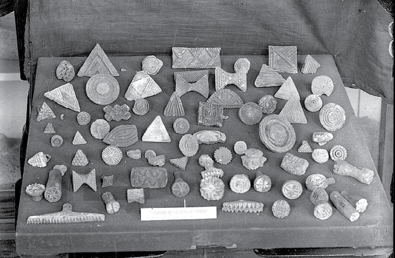
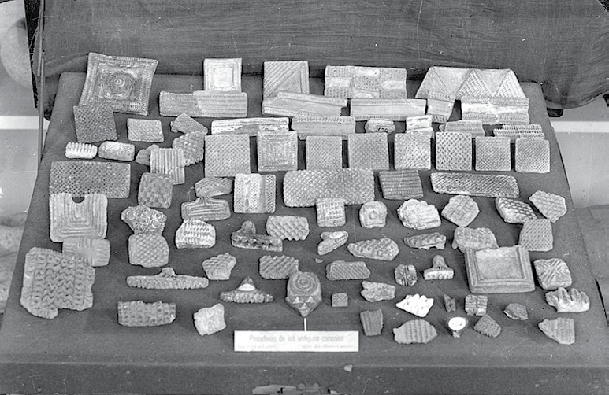
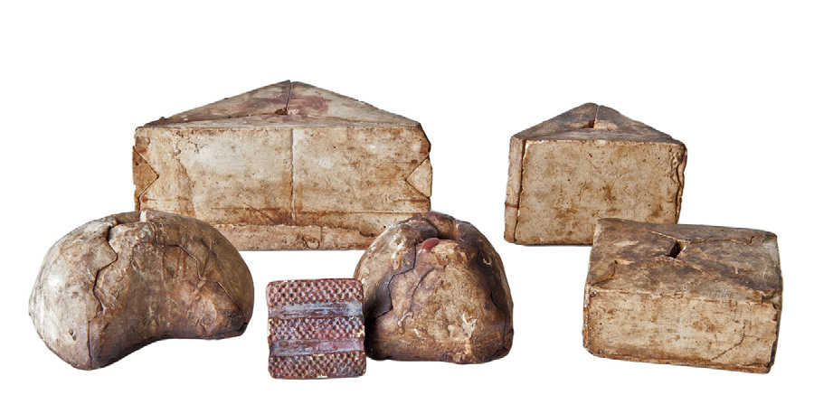
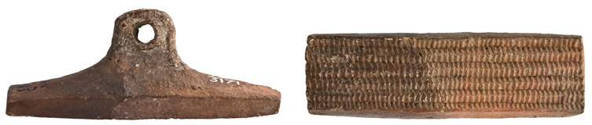
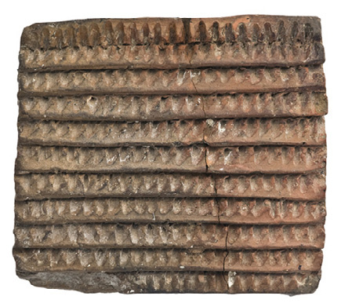
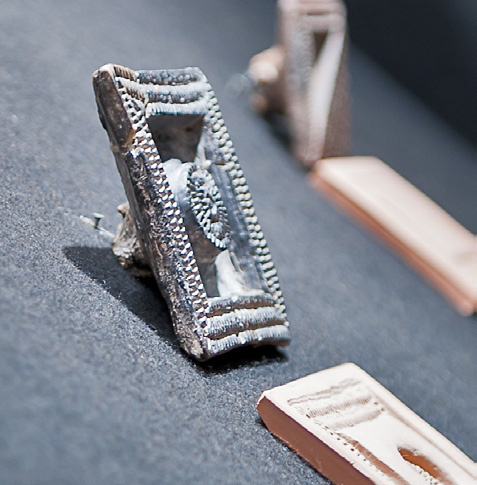

Capítulo 1Chapter 1
1. Acerca de este catálogo1. About this catalogue
Las pintaderas constituyen uno de los elementos que con mayor asiduidad se emplean en el ejercicio de evocar desde nuestros días a las poblaciones prehispánicas de Gran Canaria. Se trata de piezas que sin duda han traspasado las fronteras del tiempo, no sólo por el hecho de haber llegado hasta nuestros días y porque hoy podamos reconocerlas como parte integrante de un remoto y desconocido pasado, sino también porque las hemos incorporado a nuestra cotidianidad como icono identitario. Se han convertido pues en un identificador tanto de momentos pretéritos como del presente, sin que muchas veces seamos capaces de diferenciar dónde acaban unos y comienza el otro. Probablemente no se trate de un fenómeno cuyo origen debamos achacar en exclusividad a la posmodernidad que nos ha tocado vivir. Es, como trataremos de exponer, una historia compuesta por muchas historias.
El interés suscitado por las pintaderas puede remontarse prácticamente a los inicios de la arqueología canaria como disciplina científica, ejemplificándose en buena parte de los trabajos que desde una perspectiva u otra han abordado el período preeuropeo de Gran Canaria. La pregunta ¿qué son las pintaderas? ha sido planteada de forma recurrente desde finales del siglo XIX y, pese a recibir respuestas por parte de diferentes autores, es una cuestión que sigue estando presente tanto en los ámbitos académicos como en otros círculos donde la prehistoria canaria constituye un centro de interés cotidiano.
Sin embargo, y como así veremos, las formas de mirar a las pintaderas han cambiado a lo largo de los años que nos separan de aquellos trabajos pioneros afanados en su descripción y valoración. De ser un auténtico motivo de inquietud intelectual en las postrimerías del siglo XIX y la primera mitad del XX, a partir de las últimas décadas del novecientos asistimos a un fenómeno cuando menos curioso: mientras que decae el protagonismo de este material en la mayor parte de los trabajos de investigación1, en paralelo se percibe la creciente conversión de las pintaderas en un icono socializado de amplio reconocimiento2, que pasa a formar parte de los implementos básicos empleados para construir la imagen del pasado prehispánico de Gran Canaria, pero también la nuestra. Las respuestas a la preguntas ¿qué fueron las pintaderas?, ¿para qué se utilizaron? se hicieron socialmente prescindibles, pese a que desde la investigación arqueológica se intentara responderlas.
En estas últimas décadas, la consolidación de las pintaderas como icono pretérito coincide con la paulatina introducción de una serie de novedades en los modos de acometer y entender el estudio de las poblaciones que habitaron Gran Canaria antes de su conquista castellana. Unos cambios en virtud de los cuales, y entre otras cosas, pierde protagonismo el análisis del material por el material, quedando en un segundo plano la reducción de la esfera cultural prehispánica a meras relaciones tipológicas de los restos recuperados en los yacimientos. La pérdida de empuje de las corrientes evolucionistas, difusionistas y, en general, de aquellas de corte más positivista o próximas al historicismo cultural, dio paso a otras perspectivas de estudio en las que los restos arqueológicos se valoran, en mayor medida, al amparo del contexto que les otorga sentido histórico. Ello supuso que los materiales, por sí mismos, perdieran el protagonismo que antaño se les había asignado3, convirtiéndose ahora, aunque no siempre, en vehículos desde los que afrontar las explicaciones que se ofrecen sobre los antiguos canarios en el curso de su largo desarrollo histórico. En otras palabras, y utilizando un símil empleado en otros trabajos, es un camino en el que se intenta dejar de ver únicamente palabras sueltas –el objeto por sí solo– para leer frases coherentes, párrafos e incluso páginas de un libro de Historia que debemos seguir desentrañando. Este propósito solo puede alcanzarse considerando los materiales en el contexto en el que se documentan, su asociación con otros restos y mediante la comprensión de las secuencias y depósitos arqueológicos en los que son recuperados. Pero también estimándolos en el marco de un modelo concreto de sociedad cuya definición histórica aún sigue en construcción. La pintadera no es el objeto fundamental de estudio, sino que debe serlo la explicación de las sociedades que generaron este tipo de materiales, o cualquiera de los que se identifican en los contextos arqueológicos repartidos por el territorio insular.
A la vista de la tendencia en la investigación que describíamos en párrafos precedentes puede surgir la pregunta de si un catálogo de pintaderas como el que se presenta en estas líneas no pudiera interpretarse como un paso atrás, como una vuelta a la práctica de sublimar el objeto por parecernos singular o destacado. No cabe más respuesta que la negativa, y son varias las razones que argumentan esta postura.
Para empezar, hay poco margen de duda si decimos que las pintaderas han constituido y constituyen elementos que tienen un hondo calado en la sociedad canaria actual. Sabido es que el interés por estos "sellos" supera con creces los ámbitos académicos y se erige en un foco de atracción para todas aquellas personas que, de un modo u otro, tratan de acercarse al pasado prehispánico de Gran Canaria o al de Canarias en general. Acaso tal fascinación responda, en alguna ocasión al menos, al papel asignado a las pintaderas como icono identitario o a su visión como elemento "enigmático" al que supuestamente no se ha podido dar una explicación satisfactoria. Pero creemos que mayoritariamente dicho interés radica en un afán de conocimiento, en saber cómo eran estos materiales, qué tipos existían, de dónde proceden, cuál fue su papel en la sociedad que los generó, etc. Unas inquietudes que, desde luego, no podemos pasar por alto y que obligan a un esfuerzo por ofrecer respuestas, o al menos así se entiende desde un ejercicio de la Historia concebido como parte de un compromiso social. Y ello significa proporcionar datos contrastados, pertrechados de realidad, con vocación explicativa, siendo conscientes de los límites que en cada caso tienen nuestras proposiciones. Así las cosas, la construcción de conocimiento debe hacerse a partir de una sólida base empírica, es decir, desde lo que tenemos y no desde lo que nos gustaría tener o suponemos que tendremos. Es más, un acercamiento a la historia que se plantea abierta, accesible, disponible, para que, con los pies en la tierra, se dé continuidad al proceso de reflexión e intercambio de pareceres.
Por otro lado, no puede rehuirse en este razonamiento que entre las funciones que debe cumplir cualquier museo está catalogar, investigar y difundir sus colecciones4. Esta obra no es el primer ejemplo del compromiso de El Museo Canario por afrontar esta labor que, a buen seguro, tendrá continuidad en otros trabajos venideros.
Teniendo en cuenta esas premisas, esta monografía constituye una buena ocasión para reunir, mostrar y valorar bajo criterios similares un repertorio de piezas que atesoran una información que se encontraba dispersa, no había sido objeto de publicación previa o se había dado a conocer de forma parcial y hace muchas décadas. A la par constituye una oportunidad única de poner a disposición general un catálogo bien ilustrado de estas pintaderas para que cada persona lo emplee como instrumento a partir del cual afrontar sus propias conclusiones. Una base desde la que proyectar cada construcción de conocimientos con capacidad para liberarnos de tópicos, ideas preconcebidas o perspectivas interesadas. Pero para ello no basta detenernos en la imagen de estos materiales.
Los textos que acompañan al corpus de pintaderas servirán para completar esta aproximación a la materia que aquí nos reúne, tanto aclarando dudas como dando respuestas actualizadas a ese sinfín de preguntas que aún se ciernen pertinaces sobre esta cuestión. Aspiran igualmente a suscitar nuevos interrogantes y plantear sin ambages qué problemas deben afrontarse en el estudio de las pintaderas –y de la sociedad que las generó–, así como qué retos debemos asumir en futuros trabajos. No es necesario decir que las valoraciones y puntos de vista que aquí se recogen deben estimarse como no definitivos, pues a nadie se le escapa que queda aún un largo camino por recorrer. Esta obra aspira, por ello, a ser un modesto paso más.
Este catálogo y los textos que lo acompañan suponen de igual modo una forma de poner al día y unificar informaciones dispares y de naturaleza desigual. Se ofrecen así, para general discusión, un conjunto de datos y perspectivas de análisis que deben invitar a la reflexión sobre el fenómeno de las pintaderas y, a través de ellas, sobre las gentes que habitaron Gran Canaria antes de la conquista hispana de la isla. Es así que, tanto para los círculos académicos como para el total de la sociedad, se nos ofrece la oportunidad de superar aquellas perspectivas del material por el material, con el reto de que estas evidencias arqueológicas se erijan en vehículos para explicar procesos sociales acaecidos en el pasado. Evitamos de este modo que las pintaderas, o cualquier otro resto, sean considerados al margen de su contexto arqueológico y social manipulándose para quedar al servicio de teorías interesadas y con escaso o inexistente refrendo empírico en el sentido científico del término.
Las nuevas formas de entender el análisis y la explicación de la Prehistoria de Canarias5 permiten afrontar con otras miras estas evidencias, tratando de dejar atrás perspectivas –de estudio o de apreciación– que pueden calificarse de esencialistas en sentido amplio y que en poco ayudan a explicar los procesos históricos. Es decir, en más de una ocasión ha dado la impresión de que bajo ciertos puntos de vista resultaba prescindible entender y explicar estos materiales en su contexto social, bastando con reiterar el carácter singular de las pintaderas y, como refuerzo a ello, una filiación prehispánica que sorteaba la responsabilidad de asumir cualquier otra aclaración.
Ni el esencialismo en sentido amplio, ni en particular las perspectivas funcionalistas más básicas, constituyen cimientos adecuados para una construcción histórica, o al menos así se ha considerado a la hora de afrontar el proyecto que se presenta en estas páginas. Al menos permítasenos el intento de mostrar pintaderas mostrando también sociedades, hablando de gentes y formas de vida, del modo que quizás se vieron a sí mismas.
Es probable que todas estas aspiraciones no puedan lograrse si, en razón a lo dicho hasta el momento, mantenemos como premisa de partida las mismas preguntas que hasta el momento nos hemos hecho en torno a esta materia. A la vista de una pintadera el primer interrogante que tradicionalmente se ha planteado es ¿para qué sirvió? Y, efectivamente, la función de las pintaderas es la temática que ha centrado la mayor parte de las discusiones generadas hasta el momento, si bien no parece que haya sido la mejor estrategia a la luz de los resultados obtenidos. Pero qué pasaría si, aprovechando la posibilidad que nos ofrece este catálogo, propusiéramos otras preguntas como punto de partida. Estamos convencidos de que avanzaríamos cambiando las preguntas y no redundando en la búsqueda de respuestas alternativas a las antaño planteadas. Por esta razón creemos más oportuno cuestionarnos ahora ¿qué modelo de sociedad dio sentido, probablemente durante siglos, a materiales como las pintaderas? La pertinencia de esta pregunta parece clara ya que fueron los canarios como grupo étnico, y en el marco de un desarrollo histórico particular, el grupo que las empleó y entendió como parte integrante de su existencia social. En esa existencia social encontraremos, muy probablemente, claves capitales para explicar las pintaderas más allá de su funcionalidad en el sentido más elemental del término. Pero no basta con ello.
Al igual que sería complicado entender de forma global el pasado prehispánico de Gran Canaria excluyendo de nuestro análisis manifestaciones como las pintaderas, éstas tampoco cobrarían su pleno significado sin tener en cuenta el marco histórico que, sin duda, justifica su razón de ser. Ello implica valorar estos sellos no solo de forma conjunta y por su apariencia formal, como así permitiría fácilmente este catálogo, sino también abordando cuestiones tan diversas como la procedencia de estos materiales, su contexto arqueológico, en qué cronologías están presentes, a qué materiales y actividades se asocian, etc. Unos postulados que necesariamente deben incorporarse a nuestro análisis, pero que tampoco alcanzarán su plena capacidad como herramienta de análisis histórico si, a la vez, no nos dotamos de teorías sociales sobre las gentes que fabricaron, poseyeron y dieron uso a estas pintaderas a lo largo de su desarrollo histórico concreto6.
Como ya se apuntaba más arriba, este catálogo permite afrontar estas cuestiones a las que aludimos a partir de información novedosa, pero también bajo la oportuna mirada que proporcionan nuevos puntos de vista. Aunque lo dicho no signifique que se vayan a dar respuestas definitivas, sí puede asegurarse que cuando menos se suscitarán nuevos interrogantes y, lo que quizás sea más interesante, pueden aportarse otros elementos de juicio a partir de los que seguir reflexionando sobre los canarios en general y las pintaderas en particular. Al menos habrá merecido la pena si con lo expuesto se consigue poner coto a ciertas propuestas que, pese a ser peregrinas y carentes de fundamento, tergiversan interesadamente la realidad al servicio de intereses muy poco inocentes. Así las cosas, los textos que acompañan al catálogo de pintaderas de El Museo Canario quieren contribuir a entender un poco más estos particulares materiales, al mismo tiempo que su singular historia. En otras palabras, buscan no solo mostrar esta colección de piezas, sino también aspectos que hemos entendido necesarios para su plena comprensión y que van desde las fórmulas empleadas para la confección de estas matrices, hasta de qué forma o a través de qué vías ingresaron en El Museo Canario y, muy relacionado con ello y con la historia más reciente de nuestras islas, qué lecturas se han dado a estos materiales.
A estas alturas del texto pudiera resultar innecesario, pero antes de proseguir ha de advertirse que se ha considerado conveniente seguir empleando en esta obra el término pintadera, aunque sea un vocablo que evoque una de las funcionalidades que tradicionalmente se les atribuye. La voz pintadera tiene como principal virtud su pronta asimilación a un elemento fácilmente identificable desde el punto de vista formal, así como en lo que se refiere a una adscripción cronológica-cultural, pese a que ésta pueda resultar, en algún caso, indefinida. Dicho en pocas palabras, y para entendernos, la mayor parte de las personas que accedan a esta obra sabrán, a grandes rasgos si se quiere, qué es una pintadera y que en la secuencia histórica de Gran Canaria puede situarse en la etapa anterior a la conquista hispana de la isla. A ello debe unirse que "pintadera" es el término que, junto a "sello", ha sido usado de forma más habitual en las publicaciones que han hecho alusión a esta materia desde las más diversas perspectivas.
Uno de los hitos claves para entender el empleo de este término en el marco de la arqueología de Gran Canaria se remonta a fines del siglo XIX, cuando René Verneau recoge esta denominación entre los habitantes de Santa Lucía de Tirajana7. En el primer artículo monográfico relativo a las pintaderas (1883) el antropólogo galo introduce el tema diciendo lo siguiente:
"En trabajos precedentes hemos emitido la opinión de que el arte cerámico había alcanzado en la isla de Gran Canaria, antes de la llegada de los europeos, un desarrollo muy superior al de las demás del archipiélago. Esperamos poderlo demostrar describiendo minuciosamente las vasijas de sus primeros pobladores; pero en tanto que este extenso trabajo pueda llegar a su término, creemos conducente al mismo fin el estudio de unos objetos apenas dados a conocer hasta ahora, y esto de un modo imperfecto, no obstante el inmenso interés que presentan. Nos referimos a los barros cocidos llamados generalmente sellos o pintaderas en el valle de Santa Lucía de Tirajana" (p.1).
Desde entonces, y tanto en los círculos académicos como para la población en general, la voz pintadera ha hecho fortuna y se ha generalizado su empleo hasta nuestros días. No obstante ha de anotarse que el artículo de Verneau no es el primer texto en el que se hace alusión a este tipo de restos arqueológicos. Años antes otros autores como Gregorio Chil y Naranjo, Sabino Berthelot o Agustín Millares, entre otros, ya los habían incluido en sus apreciaciones generales sobre el pasado prehispánico de Gran Canaria con denominaciones diferentes en cada uno de los casos. Aunque sin el ánimo de ser exhaustivos, merece la pena que nos detengamos brevemente en esta cuestión. Así, Chil y Naranjo, a la sazón fundador de El Museo Canario, alude de forma bastante tangencial a las pintaderas en su obra y en ningún caso las denomina de tal modo, como se desprende, por ejemplo, del texto que aquí se transcribe: "Esto me indica que ellos [los canarios] tenían ideas filosóficas de enlace entre el cielo, la tierra y el mar, y así supongo, pues no pasa de una hipótesis, lo representaban ellos por un triángulo embutido en otro, adornado de líneas rectas, piqueteadas y terminado en pirámide que se halla perforada para llevarlo al cuello (…) poseemos en el Museo varios de estos triángulos, y para determinar su uso he tropezado con grandes dificultades que ninguno de los muchos que he consultado me ha resuelto satisfactoriamente" (1880: 258).
Por su parte el cónsul francés, Sabino Berthelot, en su obra Antigüedades canarias (1879) tampoco designa este tipo de materiales con el término de pintaderas, sino que alude a ellas identificándolas como "sellos o moldes para estampar, en tierra cocida muy dura, cuyo plano inferior muestra dibujos simétricos de una perfecta regularidad" (1980: 148). El tercero de los autores aludidos, A. Millares, nombra a estos restos con los términos de sellos o dijes8, en parte en relación a la funcionalidad que como elementos de adorno personal les atribuye. Pero de todas las nomenclaturas propuestas, y como ya adelantamos, será a partir del trabajo de René Verneau cuando la voz pintadera se generalice y se convierta en el concepto más empleado en la literatura científica para distinguir estos elementos, como así sigue haciéndose hasta nuestros días9.
No obstante, la repetición de un término o su fuerte arraigo científico o social no constituye de por sí argumento suficiente como para que, sin más, se haya optado aquí por dar continuidad a su empleo. Con todo, llamar ahora a las pintaderas de otro modo, y sobre todo sin que haya mediado una reflexión previa sobre esta cuestión, no haría otra cosa que introducir un cierto factor de confusión en esta materia10. Por estas razones se ha estimado más oportuno centrar la exposición de ideas y la discusión en torno a otras cuestiones consideradas, por lo pronto, de mayor trascendencia y, en consecuencia, seguir empleando el término pintadera en estas páginas. Ello no significa esquivar un problema fundamental, pues de hecho no creemos que sea tal, sino que se ha valorado que quizá sea ahora el momento de hacer acopio de elementos de juicio para que en el futuro, y de estimarse oportuno, se afronte dicho debate11.
Dentro de estas cuestiones de nomenclatura ha de hacerse una nueva aclaración. En las páginas que siguen se emplearán los términos "sello" o "matriz" como sinónimos de pintaderas. Con ello se ha buscado básicamente la fluidez del lenguaje y evitar reiteraciones que hagan cansina la lectura de estas líneas. De nuevo se advierte que tal empleo, y pese a que se cualifique al objeto, se hace sin el ánimo de hacer una lectura apriorística de la función a la que se destinaron estos materiales, pues sobre esta cuestión se volverá en un capítulo dedicado específicamente a esta controvertida materia. Desde luego que estamos de acuerdo con que el uso del lenguaje no es un asunto banal, y la forma de expresarse y transmitir ideas, descripciones, reflexiones o puntos de vista condiciona el mensaje final que pretende comunicarse. Y es precisamente por esta razón que hemos preferido prevenir al lector sobre este asunto, como también lo haremos cuando lo que se trata son sugerencias, reflexiones o particulares puntos de vista.
1.1. LA COLECCIÓN DE PINTADERAS DE EL MUSEO CANARIO
La colección objeto de este trabajo está compuesta por 214 ejemplares. Como tendremos la oportunidad de exponer, proceden de diversas localidades de Gran Canaria y forman parte del Fondo de Arqueología de la citada institución. Este fondo nació tras la fundación del Museo en 1879 y creció gracias a las aportaciones realizadas por sus fundadores, amigos, socios y colaboradores, a las que pronto se sumaron las adquisiciones efectuadas por el propio centro, los hallazgos de sus exploraciones a diferentes rincones de la isla y los materiales resultantes de las intervenciones arqueológicas.
Aunque luego se abundará en esta cuestión, merece la pena señalar que en lo tocante al volumen y crecimiento de esta colección, el antropólogo francés René Verneau referenció en su artículo Las pintaderas de Gran Canaria (1883) que estaba compuesta por 42 unidades12.
Algunos inventarios de materiales del Museo de finales del siglo XIX, con anotaciones hasta 1888 y 1890, listan progresivamente 59 y 63 (AMC/AMC 1209 y 1213). Un borrador que comprende las fechas de 1880 a 1903, elaborado para la ampliación del primer Libro de Registro de Entradas de esta institución (1880-1900), revela inscritas 94 (AMC/AMC 3841)13. Años más tarde, el Catálogo de la colección de cerámica, y objetos arqueológicos. Salas Grau y Navarro (1944), confeccionado entre octubre y diciembre de 1938 por el arqueólogo gaditano José Pérez de Barradas, inventaría 127. Por su parte, las placas fotográficas realizadas en torno a 1936 y 1940 por el fotógrafo alemán Teodoro Maisch, residente en Las Palmas de Gran Canaria en un período comprendido entre 1920 y 1940, muestran 134. Finalmente, las 80 restantes de la colección corresponden a ingresos posteriores a 194114.
En ambas placas se aprecian 134 pintaderas. En esta cifra no se incluyen otras piezas que formaban parte de la colección, tal como nos revelan las imágenes: 2 fragmentos de ídolos (registros 2835 y 2840), 1 vaciado o reproducción de pintadera (registro 3105), 17 pintaderas de madera (registros 3190-3201; 3203 y 3232-3235) y 3 fragmentos sin identificar.

Fig. 1.1. Placa fotográfica realizada por Teodoro Maisch entre 1936-1940 (AMC-FFTM-prov1863)
Fig. 1.2. Placa fotográfica realizada por Teodoro Maisch entre 1936-1940 (AMC-FFTM-prov1865)Los problemas actuales del Fondo de Arqueología, y por ende del conjunto de las pintaderas, enraízan en los criterios de documentación contemporáneos a la fundación de El Museo Canario que permanecieron en vigor, muchos de ellos, hasta la antepenúltima década del siglo XX. Por una parte, las vías de ingreso de aquel entonces solo registraban la localidad de la que eran tomados los objetos, además de la fuente (nombre de la persona) y de la forma (donación, adquisición, exploración, etc.), careciéndose en el presente de las circunstancias y contextos de los hallazgos. Por otra parte, durante los 133 años de historia de esta sociedad han acontecido un cambio de sede, ampliaciones y reformas de sus instalaciones, que han derivado en movimientos y traslados de los fondos museográficos y documentales, así como en actualizaciones y conversiones de sus inventarios. En este devenir, los sistemas de control y gestión de los materiales han dependido única y exclusivamente de la meticulosidad del registrador y, como consecuencia de esta supeditación, algunos ejemplares, entre ellos las pintaderas, han visto alterada o perdida su información.
Sin embargo, no son éstas las únicas vicisitudes a las que se han visto sujetos los fondos museográficos y la colección de pintaderas de El Museo Canario. Durante años, estas piezas fueron objeto de un intenso proceso de estudio, debate y experimentación. Manifestación de ello son los artículos publicados en el último tercio del siglo XIX en los que unos autores y otros expresaban sus opiniones en torno a su funcionalidad (G. Chil y Naranjo, 1880: 258; A. Millares, 1881: 310; R. Verneau, 1883: 17; D. Ripoche15, 1901: 108; etc.). La atracción de este material fue tal que no solo se estudiaba y se debatía en torno a él, sino que también se reproducía generando vaciados que se intercambiaban y exponían (R. Verneau, 1883: 14; D. Ripoche, 1901: 105)16. Así pues, como resultado de esta práctica de realizar moldes, propia de fines del siglo XIX, y de otras coetáneas y posteriores tales como experimentar sobre su funcionalidad (R. Verneau, 1883: 17 y 21)17, reconstruir y restaurar para embellecer y mejorar su presentación o ilustrar usos e improntas, las pintaderas han llegado a nuestros días impregnadas de todo tipo de restos –yeso, pintura marrón-rojiza, barro naranja, adhesivo, etc.– que dificultan el esclarecimiento de la finalidad, o finalidades, para las que estuvieron destinadas. En este sentido, elementos como la plastilina y la masilla adhesiva (blu-tack), empleados con frecuencia en los museos para sustentar los objetos, la grasa humana, procedente de su reiterada manipulación, la tinta, utilizada para signar las piezas, y el polvo, entre otros, son agentes que se suman a los restos citados para, además de alterar el material18, obstaculizar determinadas investigaciones. Sirvan de ejemplo los siguientes datos: 143 pintaderas evidencian presencia de yeso, 91 barro naranja, 85 polvo incrustado, 57 salpicaduras de tinta, 54 manchas de plastilina, 207 grasa, 44 pintura marrón-rojiza, 34 adhesivo, 22 masilla adhesiva y 5 una mezcla de cola y tanza.

Fig. 1.3. Moldes de yeso empleados para realizar reproducciones de pintaderas, datados entre finales del siglo XIX y comienzos del XX. También se puede observar un vaciado en yeso una vez pintado para su presentación final. En la actualidad se conservan 38 moldes completos y 4 vaciados, si bien las pintaderas manchadas con yeso suman 143 y las impregnadas con salpicaduras de pintura marrón-rojiza se elevan a 44.
Fig. 1.4. Pintadera 3171. Nueve matrices, entre ellas la que se muestra, fueron reconstruidas a principios del siglo XX. Estimamos a partir de 1909, asociadas a la creación de un "Gabinete de Reproducciones o vaciados, anejo al mismo museo, de figuras clásicas y de modelos de reconocido mérito para su estudio y comparación" (Artículo 2º del Estatuto de la Sociedad El Museo Canario de 1909). Estos tratamientos, que buscaban completar la pieza en casos excepcionales, se realizaban sobre la zona perdida. 2 cm.
Fig. 1.6. Pintadera 3089. Esta pieza presenta a la altura de su apéndice, parcialmente conservado, un adhesivo tipo cola de zapatero que, mezclado con tanza, sujeta la pintadera a un panel oblicuo durante su exhibición. 5 son las matrices afectadas por esta situación. Como también se puede observar, ésta y otras, en total 10, se hacen acompañar de sus improntas. Este enfoque divulgativo de presionar las matrices originales sobre una pasta arcillosa, y el montaje del mismo sobre un plano inclinado, data de la década de los ochenta, tras una reforma global de las instalaciones museísticas llevada a cabo entre 1984-1987. De las pruebas realizadas para enseñar al espectador el manejo y la huella de estos objetos se conservan 56, si bien las pintaderas manchadas con barro naranja, el usado para recibir la presión, suman 91. Retomando una vez más el ejemplar 3089, éste nos revela otros restos: yeso, pintura marrón rojiza, reintegración, polvo, plastilina y grasa, además de los enunciados, cola, tanza y barro naranja.
Fig. 1.5. Pintadera 3098. Este objeto muestra por cualquiera de sus vistas el adhesivo aplicado para unir los fragmentos que lo componen. 34 son las pintaderas que lo manifiestan. 2 cm.En todo caso, los avatares descritos no restan todo su valor a la colección de pintaderas de El Museo Canario, pues presenta, de igual modo, una serie de ventajas que justifican la edición de este catálogo. En primer lugar, permiten un acercamiento global a matrices procedentes de yacimientos de prácticamente todo el territorio insular, si bien es cierto que con un desigual grado de representatividad. A tal efecto en las páginas de este trabajo –y en el correspondiente catálogo– encontraremos yacimientos para los que se conoce un número muy importante de pintaderas. En otros casos la cantidad será sensiblemente menor, hasta el punto de ser testimonial en algunos enclaves. Como se verá luego, en la explicación de estas circunstancias interactúan gran cantidad de variables como, por ejemplo, la amplitud del sitio arqueológico, su naturaleza, la extensión e intensidad de las intervenciones arqueológicas practicadas, etc. Si se nos permite la licencia, podemos decir que cada pintadera protagoniza una historia particular que, como no podía ser de otro modo, debe centrar parte de nuestra atención.
Así, el testimonio de cómo llegan hasta hoy tales pintaderas no solo explica qué materiales se encuentran ahora a nuestra disposición, sino también la cantidad y la calidad de la información que sobre su contexto de procedencia podemos obtener en cada caso. Una cuestión ésta que, lejos de obviarse, debe ser tenida muy en cuenta a la hora de considerar el alcance de las valoraciones e interpretaciones que en cada caso permiten estos materiales. Sin perjuicio de lo dicho, las carencias informativas de las que adolecen algunas piezas pueden verse compensadas, al menos en cierta medida, ante la oportunidad de considerar un número tan elevado de pintaderas como las que aquí han logrado reunirse. A ello debe añadirse algo no menos importante, y es que para un número nada despreciable de piezas disponemos de una información bastante completa al tener su origen en intervenciones arqueológicas recientes y desarrolladas con unos criterios metodológicos adecuados.
En todo caso, somos conscientes de que la colección de pintaderas de El Museo Canario ni está cerrada, ni es la única que existe en Gran Canaria. En lo tocante a lo dicho en primer lugar, la continuidad de trabajos arqueológicos en la isla seguirá deparando a buen seguro nuevos materiales que engrosarán y diversificarán el que ahora se presenta. No sería nada extraño que en unos años debamos plantearnos de nuevo algunas de las cuestiones recogidas en las páginas que siguen, lo que lejos de desanimar constituye un optimista punto de partida para esta obra. En lo que respecta a la presencia de otros repertorios de pintaderas hay que destacar, sin duda, el custodiado en el Museo Parque Arqueológico Cueva Pintada. Una colección sobresaliente, tanto por el número como por la calidad informativa de sus piezas, cuyo estudio significará, sin lugar a dudas, un sustancial enriquecimiento de nuestros conocimientos sobre esta materia. De nuevo hay que decir que el futuro es prometedor.
Otra aclaración es necesaria. Solo se han incluido en el presente catálogo las pintaderas confeccionadas en barro, quedando excluidas las piezas de madera que en otras ocasiones han engrosado esta categoría. La principal razón de esta supresión es que su origen y adscripción cronocultural presenta serias dudas, como ya han señalado antes diversos autores. Para todas las pintaderas de madera existen importantes reservas sobre si realmente se trata de piezas prehispánicas o pudiera tratarse de "sellos de pan" u objetos análogos fechables en momentos posteriores a la conquista castellana de la isla. Ante la incertidumbre, y para evitar errores, se ha optado por descartar estos materiales. Las dudas sobre su origen o la materia prima en la que están fabricadas no han sido, a la postre, las únicas razones para excluir estas piezas del catálogo. Una vez valoradas en conjunto las pintaderas puede observarse que las fabricadas en madera se alejan del patrón que, como se expondrá luego, definen como norma a aquellas para las que existen pocos recelos sobre su filiación cultural.
1.2. EL CONTENIDO DE ESTE TRABAJO
Hacer de esta obra algo realmente útil, o al menos con cierta capacidad de suscitar la reflexión, hacía que no pudiera limitarse a una mera relación de imágenes de pintaderas acompañadas de sus correspondientes descripciones. La elaboración y publicación de un catálogo de pintaderas ha sido una constante en los anales de El Museo Canario, si bien cualquier labor en este sentido no ha estado exenta de problemas. Una de estas dificultades residió precisamente en cómo abordar el análisis particular de estos materiales. La descripción de estas piezas suscitó desde el comienzo de su estudio discrepancias, pues se debatía entre afrontar una descripción interpretativa o decantarse por hacer prevalecer los criterios técnicos en este proceso de análisis. Finalmente, fue esta última opción la elegida en este trabajo, pues, tras diversas pruebas, mostraba la indiscutible ventaja de ofrecer uniformidad y claridad en el lenguaje empleado. De todos modos, cualquier tipo de descripción requería que toda persona que accediese a ellas tuviera un cierto conocimiento previo de los conceptos que se emplearían y, especialmente, de las denominadas técnicas decorativas que se practican sobre los materiales arcillosos19. Su importancia no solo radica en que generan motivos que definen al objeto, sino en que durante la elaboración del presente trabajo se erigieron en un criterio clave para la agrupación seriada de la colección. Por esta razón se ha querido dar un protagonismo especial a esta materia, dedicando un capítulo completo a una cuestión que entendimos primordial desde el mismo momento en el que se planteó el proyecto de este catálogo. Así, se abordan de forma sistemática las técnicas y procesos desarrollados para la elaboración de las pintaderas, ilustrando cada uno de los procedimientos con ejemplos concretos que forman parte de los fondos de El Museo Canario. Estamos convencidos de que este apartado favorecerá una nueva mirada a las pintaderas, reparando ahora en detalles que de otro modo pudieran haber pasado inadvertidos20. Se reúne así un amplio volumen de información que, entre otras cosas, ayuda a sistematizar los datos que singularizan estas piezas y permite entrever sus cualidades más significativas. Al mismo tiempo colabora en la configuración de uno de los aspectos más sobresalientes de este tipo de materiales, y es que no son creaciones singulares sino que son el resultado de unas pautas que se repiten en distintos ejemplos. Desde nuestro punto de vista, este hecho proporciona una de las claves más importantes para construir parte de su explicación histórica. Más allá de una mera recopilación de sistemas y técnicas, este apartado se revela fundamental para entender el sentido de estos materiales.
Asimismo, para la realización de esta monografía se redactó un decálogo en el que se normalizaron sus objetivos, descripción del objeto, estilo del lenguaje, modelo de ficha y corpus gráfico que recibió claras influencias de la disciplina de la Sigilografía21. Valga como ejemplo la recomendación expuesta en el Manual de Sigilografía, editado por el Ministerio de Educación y Cultura: "En la lectura de un sello es esencial la identificación correcta de las figuras y el empleo de una terminología adecuada. (…) No se pueden dar normas concretas sobre el grado de detalle con que debe describirse cada sello diferente, que deberá ser decidido por el autor de la descripción, en todo caso es aconsejable evitar explicaciones muy extensas que pueden resultar confusas y utilizar un vocabulario consistente recurriendo siempre a los mismos términos para designar los elementos de la representación, especialmente cuando se va a dar a la información un tratamiento informático". (M.ª Carmona, 1996: 68)22.
Desde el primer momento se planteó la necesidad de que, además de esta introducción y el apartado técnico, se incluyeran una serie de textos que, teniendo como hilo conductor estos sellos, proporcionara elementos de juicio para su precisa valoración como expresión social de aquellas gentes que nos precedieron en el tiempo y que hoy conocemos como canarios. Sin duda pueden no leerse estas aportaciones y solamente disfrutar del corpus ilustrado de pintaderas para satisfacer nuestra curiosidad. Sin embargo, también podemos atrevernos a dar un paso más y adentrarnos en la particular historia de cada una de las piezas porque es probable que en ella encontremos algunas claves que nos hablen de gentes, costumbres y formas de vida. Las distintas aportaciones incluidas en esta obra aspiran a ello, y no podía pasarse por alto la posibilidad de señalarlo en estas primeras páginas. Sirva de invitación lo que a continuación sigue.
Como decíamos, la propia historia de las pintaderas –cómo llegan a formar parte de las colecciones, lo que conocemos de su contexto de procedencia, etc.– es clave no solo para saber ante qué nos encontramos, sino también hasta dónde podemos llegar en nuestras valoraciones. Manteniendo la tónica de lo dicho hasta el momento parece claro que las consideraciones actuales sobre las pintaderas deben ir más allá de su mera valoración formal. A tal efecto, reconocer este material como instrumento de análisis de un proceso histórico concreto pasa por tener en cuenta los elementos contextuales que contribuyen a explicar su existencia, así como su asociación a qué materiales o a qué actividades y en qué tiempos. Pero también, y en no pocos casos, interesará saber quién aporta una o varias pintaderas a una colección determinada, cómo y porqué se descubren esos materiales y qué sistema se empleó en su recuperación23.
El mejor ejemplo de lo que quiere decirse lo proporciona la propia colección de El Museo Canario, donde la historia de las pintaderas que atesoran sus fondos encarna, al menos en cierto modo, la de esta institución a lo largo de su más de cien años de existencia. Con todo, es también un reflejo de los cambios acaecidos en la práctica arqueológica en nuestro archipiélago y de los modos en los que nos hemos acercado a ese pasado e intentado aprehenderlo. Por estas razones pensamos que se trata de una información que ayudará a entender y explicar las pintaderas o, sin querer ser tan ambiciosos, a valorar la cantidad y la calidad de los datos disponibles, a comprender el porqué de las visiones que en distintos momentos se ha tenido sobre esta materia y qué nuevos elementos de juicio se han ido poniendo a nuestro alcance a medida que hemos ido conociendo con mayor profundidad la Gran Canaria prehispánica.
Así, y para ver cumplida la posibilidad a la que se aludía más arriba se ha creído oportuno incluir en esta obra un capítulo dedicado a la formación de la colección de pintaderas de El Museo Canario. Creemos que la utilidad de esas páginas es tal que nos atrevemos a decir incluso que servirán también para conocer cómo somos hoy en día y cómo hemos vuelto nuestra mirada al pasado.
Pero esta visión general que quisiéramos aportar quedaría, a nuestro juicio, incompleta si no hiciéramos un balance historiográfico sobre las pintaderas: ¿Cómo han sido consideradas a lo largo del tiempo, qué interpretaciones se les ha dado y quién lo ha hecho, con qué criterios o bajo qué premisas? No es momento éste para recordar las bondades de los análisis historiográficos24, pero en este caso se nos antojaba que un capítulo dedicado a tal cuestión debía tener un especial protagonismo en esta obra. De dicha trayectoria depende mucho cómo hemos visto las pintaderas y cómo las vemos, qué hemos heredado y qué hemos olvidado de trabajos previos, de dónde partimos en nuestro análisis y con qué problemas se han debido enfrentar en aquellos textos que son antecedentes del que hoy afrontamos.
En este sentido, a nadie se le escapa que buena parte de las cuestiones que conforman nuestra visión de las pintaderas son el resultado de las investigaciones que sobre este tema nos han precedido en el tiempo. Esta revisión historiográfica también servirá para distinguir qué cuestiones de las que hoy conforman nuestro saber sobre estos materiales son el resultado de estudios específicos y cuáles no son más que especulaciones con nula o escasa base empírica, en qué casos podemos hablar de teorías y cuándo es mejor tipificar ciertas posturas especulativas.
Una atención especial merece un aspecto concreto de este repaso historiográfico. Como en otros tantos materiales del pasado prehispánico de Canarias, las pintaderas no han quedado exentas del recurso tan habitual de las comparaciones con el norte de África, normalmente con las miras puestas en un no siempre definido mundo bereber. La búsqueda de analogías, el establecimiento de semejanzas y diferencias con materiales prehistóricos o protohistóricos del continente ha sido una estrategia epistemológica que, pese a su recurrencia, no está exenta de problemas, más aún cuando la pesquisa de tales "paralelismos" no suele ir más allá de eventuales semejanzas formales. La búsqueda de dichas similitudes a veces nos hace olvidar que las islas y el continente próximo no es que muestren semejanzas culturales, sino que comparten una historia común que requiere una apuesta decidida por profundizar en la reconstrucción y explicación de procesos sociales para superar la barrera de la mera comparación de la apariencia como recurso intelectual. Tal es así, que en el repaso historiográfico se mostrarán estas y otras consideraciones, tratando de exponerse, y en su caso aclararse, todas estas cuestiones y otras que le toca descubrir a quien se adentre en sus páginas. Casi nos atrevemos a garantizar que tras la lectura de este texto atenderemos a las pintaderas de un modo diferente.
Esta obra finaliza con el planteamiento de algunas reflexiones que a los autores nos ha suscitado el trabajo abordado. Se podría haber optado por un texto en el que se recogiesen, sin más, las descripciones de las pintaderas, su particular historia hasta la actualidad y cómo las han valorado aquellas personas que las incluyeron en su investigación. Pero una vez elaboradas estas cuestiones se consideró que podría ser buen momento para plantear, casi como un ejercicio de repaso en voz alta, la manera en que podríamos dirigir ahora nuestra mirada a estos materiales. El propósito es, básicamente, hacer una muy breve recapitulación de la información concerniente a las pintaderas, en qué contextos se han identificado o qué datos tenemos para determinar un marco cronológico de referencia. A partir de los testimonios que conocemos se afronta una particular visión de estos sellos, de su protagonismo en los yacimientos prehispánicos y en los repertorios materiales que en ellos se documentan. En definitiva, y con la información disponible hasta el momento, reflexionar sobre las pintaderas, pero no como elementos cuyo valor reside en sí mismos, sino al amparo que proporciona el contexto social de los antiguos canarios en su dilatado desarrollo histórico.
Este conjunto de textos que acompañan al catálogo no estaría completo si faltara un listado bibliográfico en el que se incluyeran, entre otros, buena parte de los trabajos que de una forma u otra han hecho alusión a las pintaderas25. Se abre la puerta a conocer en profundidad las aportaciones que han servido de antecedentes a esta obra, así como las publicaciones citadas en el texto para reforzar una idea o refutar otra. La persona que así lo desee encontrará o ampliará en esa bibliografía referencias precisas a lo publicado sobre el origen de según qué pintaderas, las circunstancias del hallazgo o el contexto en el que se documentaron. Mediante la consulta de estas publicaciones no solo se profundizará en mucho de lo dicho en los textos del catálogo, sino que también podrá surgir el disenso con todo o con parte de lo allí expuesto. Y es aquí, tanto en los puntos de vista comunes como en los divergentes, donde se podrán sentar las bases para seguir creciendo en la generación de conocimiento.
1.3. BÚSQUEDAS EN EL CATÁLOGO Y FICHA DE PINTADERAS
Completa esta obra lo que, sin duda, puede considerarse el elemento más importante del trabajo, es decir, el corpus ilustrado de pintaderas. Páginas atrás ya se adelantaba que se había conseguido reunir más de 200, todas ellas descritas individualmente y acompañadas de su correspondiente documentación gráfica. Se ha intentado que cada una de estas fichas reúna una información completa y que, a la vez, sea expuesta con claridad. La magnitud de la colección de El Museo Canario, así como las distintas procedencias de las piezas obligaban a organizar estos materiales de un modo razonable a fin de hacer más accesible la información que encierran. Así, a la hora de presentar los materiales en el catálogo se ha optado por ordenarlas siguiendo distintos criterios. El primer criterio de búsqueda puede ser el número de registro de la pintadera (de 4 ó 5 cifras), al que se alude en estas páginas cada vez que se cita alguna de ellas, bien dentro de una relación de materiales procedentes de un enclave, de una actuación concreta o como ejemplo de algún aspecto recogido en el texto, como el empleo de una particular fórmula decorativa.
El segundo de los criterios de rastreo atañe a cuestiones técnicas o a la morfología del campo, de tal suerte que, por ejemplo, pueden explorarse las pintaderas rectangulares o aquellas que están decoradas mediante incisiones. Es cierto que se trata de parámetros muy amplios, pero a la par permiten que cada persona que acceda a este recurso vaya depurando progresivamente su búsqueda o, en su caso, ampliándola hasta ver cubiertas sus inquietudes concretas.
Finalmente también puede indagarse en el catálogo en atención al lugar de procedencia de las piezas, lo que incluye tanto el término municipal (Agüimes, por ejemplo) como el nombre con el que se conoce al yacimiento en el que fue recuperada (Caserones, por poner un caso). Basta con indicar Gran Canaria en este campo para ver todas las pintaderas de la isla que se custodian en los fondos de El Museo Canario. Cada una de las piezas resultantes de la búsqueda mostrará una ficha en la que se recogerán, además de su número de inventario, sus dimensiones, una breve descripción, el lugar de procedencia, una sinopsis de los aspectos esenciales para conocer la historia de la pieza y finalmente las referencias bibliográficas que puedan completar la información ofrecida. Un ejemplo de ello se muestra a continuación:
Inventario: 3097 Dimensiones: Altura del campo: 44 mm. Anchura del campo: 44 mm. Altura de la pieza: 32 mm. Descripción/Técnica: Cuadrada con apéndice perforado. El campo está definido por impresiones cuadrangulares. La pintadera presenta también impresiones de sección angular en sus cuatro laterales y áreas con bruñido. Procedencia: ¿Agüimes?, Gran Canaria. Historia: Figura en placas fotográficas del Archivo de El Museo Canario realizadas entre 1925 y 1940, por lo que su recuperación debió de tener lugar antes de esta última fecha. Según el catálogo de materiales arqueológicos de El Museo Canario elaborado por José Pérez de Barradas, podría proceder de Agüimes. Bibliografía: PÉREZ DE BARRADAS, J., "Catálogo de la colección de cerámica y objetos arqueológicos (Salas Grau y Navarro) de El Museo Canario". El Museo Canario, anexo nº 1 (Las Palmas de Gran Canaria, 1944), pp. 1-72, nº 840.
Cada ficha de pintadera contará con una fotografía de la pieza editada a una escala adecuada para facilitar la observación directa de sus detalles26. La imagen reproduce lo que se ha denominado campo, tomada con esta zona completamente en paralelo al objetivo de la cámara27. La normalización del modo en el que se presentan las fotografías evitará no sólo las distorsiones que pudiera ocasionar el empleo de distintas perspectivas, sino también ofrecerá una misma vista para todas las pintaderas a fin de que puedan ser valoradas en condiciones de igualdad. Sin perjuicio de lo dicho, no serán pocas las ocasiones que se tengan para mostrar detalles o diferentes visiones de algunos de los sellos, tanto en el propio corpus descriptivo como en los textos que lo acompañan.
Como puede desprenderse de lo dicho hasta el momento en relación a la ficha de cada pintadera, para su configuración se ha buscado un cierto equilibrio entre la imagen y el correspondiente texto descriptivo. Pese a que las fotografías sean clarificadoras y demostrativas de cada una de las piezas seleccionadas, se hacía necesario que las palabras despejaran incertidumbres o definieran aspectos sobre los que pudieran quedar algunas dudas, en especial sobre las particularidades de las técnicas empleadas para el trabajo en el campo de la pintadera.
Desde luego que los criterios de búsqueda/clasificación descritos en los párrafos precedentes no son los únicos que se podrían haber seleccionado. La complejidad técnica y morfológica de las pintaderas, la variabilidad de sus dimensiones y las diferencias de los motivos representados hacía extremadamente difícil recoger todos aquellos parámetros que, en atención a los intereses particulares de cada cual, se entendiesen como los más oportunos. En cualquier caso disponer de este catálogo hace factible la posibilidad de que cada lector o lectora haga su propia clasificación y ordene estos materiales arqueológicos en función de sus propios intereses. Así, tanto la búsqueda combinada, como la posibilidad de guardar cada una de las imágenes, posibilitan rehacer los elementos propuestos para la clasificación y ajustarlos a las necesidades que en cada caso se presenten. Es, por tanto, una invitación a la construcción conjunta de conocimientos.
Llegados a este punto, muchas de las personas que lean estas últimas líneas de la introducción continuarán planteándose una cuestión. Tal duda no es otra que si, por fin, en algún lugar de este trabajo se va a desvelar la "auténtica función" de las pintaderas. Es un interrogante al que tendrá que responder cada uno de ustedes una vez concluya su lectura.
Notas al capítulo 1
- Considerado como foco de atención particular y preferente.
- "La pintadera y la grafía canarias son símbolos representativos de nuestra identidad. Afirmamos que han sido un estímulo permanente para el arte canario. Reclamamos la legitimidad del origen autóctono de nuestra cultura" (Manifiesto de El Hierro, 1976) (A. Abad, 2001: 113).
- Otra característica de estas posturas mayoritariamente superadas es que no todos los materiales recuperados en los yacimientos arqueológicos eran objeto de idéntica atención por parte de la investigación, ya que lo eran de forma preferente aquellos que apriorísticamente se consideraban destacados por su singularidad, espectacularidad o belleza en su factura. Por poner un ejemplo, los restos de fauna marina y terrestre o la industria lítica constituían repertorios materiales que, con suerte, se mencionaban en los listados de materiales extraídos de los yacimientos arqueológicos, no mereciendo luego más consideración que su enunciado. Sin embargo las pintaderas, los ídolos, ciertos recipientes cerámicos, las momias… fueron elementos a los que de entrada se atribuía la facultad de ilustrar cómo habrían sido esas sociedades pretéritas sin que se cuestionase en ningún momento su capacidad para explicarlas.
- El Real Decreto 620/1987, de 10 de abril, por el que se aprueba el Reglamento de los Museos de Titularidad Estatal y del Sistema Español de Museos, dispone en su artículo 2: "Son funciones de los museos: a) La conservación, catalogación, restauración y exhibición ordenada de las colecciones. b) La investigación en el ámbito de sus colecciones o de su especialidad. c) La organización periódica de exposiciones científicas y divulgativas acordes con la naturaleza del Museo. d) La elaboración y publicación de catálogos y monografías de sus fondos. e) El desarrollo de una actividad didáctica respecto a sus contenidos. f) Cualquier otra función que en sus normas estatuarias o por disposición legal o reglamentaria se les encomiende".
- Una generación de conocimientos que, también como reto de futuro, no desea ser excluyente sino que, al contrario, ambiciona convertirse en una tarea participativa y social.
- La necesidad de dotarnos de teorías sociales es una reivindicación que en absoluto es novedosa, si bien es cierto que en la última década tal postura ha ido adquiriendo un especial énfasis y se ha materializado en muy diversas aportaciones. Sin embargo no nos resistimos a recordar las palabras del desaparecido C. Martín de Guzmán en el que sería su último trabajo publicado: De arqueología canaria: planteamientos teóricos e historiográficos (1997: 29). Decía este autor: "sin unos planteamientos teóricos previos y sin un marco historiográfico referencial consecuente, la investigación arqueológica, a pesar de la utilización de procedimientos técnicos más o menos avanzados, puede entrar, sin darse cuenta, en el tema de la simple erudición local (insular o regional) y distanciarse de la órbita universal de conocimientos".
- Cabría plantear, como antes han hecho otros autores, si el término pintadera es empleado por la población de Santa Lucía de Tirajana por las similitudes entre estos restos arqueológicos y los sellos de pan que usualmente se empleaban para marcar este comestible. Según el Diccionario de la Lengua Española la pintadera es un "instrumento que se emplea para adornar con ciertas labores la cara superior del pan u otras cosas".
- "1. Adorno de los que se ponían a los niños al cuello o pendientes de la cintura. 2. Joya, relicario o alhaja pequeña con que se suelen adornar las mujeres e incluso los hombres. (…)", según define el Diccionario de la lengua española (2001: 557).
- En el año 1882, Amaranto Martínez de Escobar pronuncia un discurso con ocasión del aniversario de la fundación de El Museo Canario aludiendo a estos materiales como "sellos o amuletos de barro o pintaderas, como las llama el historiador Marín y Cubas en la creencia de que esos sellos servían para pintarse o tatuarse" (p. 203). Una afirmación ésta que llama poderosamente la atención pues, como ya advirtiera R. Verneau, en la obra del médico teldense Marín de Cubas no se emplea dicho término, ni se hace alusión aparente a este tipo de restos arqueológicos.
- Hay que indicar que no han faltado algunos cuestionamientos relativos al uso de según qué términos, si bien siempre en directa relación con la funcionalidad que en cada propuesta se atribuía a estos materiales, como así lo hace, por ejemplo, D. Wölfel al señalar que "y así se habla una vez de pintaderas, otra de sellos, a pesar que en ambos casos se trate de estampillas que señalan una posesión personal o las personas mismas" (1942: 106).
- Debate que, por otra parte, nunca podría limitarse a un nivel local o regional, ya que el Diccionario de materiales cerámicos, editado por el Ministerio de Educación, Cultura y Deportes con el fin de normalizar e informatizar los museos estatales y el patrimonio en general, define la pintadera como: "Sello cerámico con motivo decorativo en hueco o en relieve en uno de sus extremos que se utiliza impregnado de sustancia colorante, para estampar" (2002: 71).
- "También es en Gran Canaria donde se ha encontrado la magnífica colección de estos objetos que posee El Museo Canario. Esta serie de piezas, mucho más importante en su género que las demás conocidas [se refiere a las que estaban en posesión de particulares: Diego Lebrun 4; Miguel Maffiotte 1; Juan de Quesada y Déniz 2; Gregorio Chil algunas; Gabinete Científico de Santa Cruz de Tenerife 3], tanto por su número como por la diversidad de formas y tamaños, encierra 42 pintaderas, de las cuales 30 han sido halladas hace dos años en Agüimes [se refiere al hallazgo acontecido en agosto de 1881 que en breve será mencionado], y el resto provienen de Gáldar y Tirajana". (R. Verneau, 1883: 2). Algunos de los datos que R. Verneau expone, referidos concretamente a la cantidad de las pintaderas (42) y a la procedencia de las mismas (Agüimes, Gáldar y Tirajana), no se corresponden con exactitud a los extraídos del posible primer inventario de materiales arqueológicos de El Museo Canario (AMC/AMC 1211), fechado con anterioridad a julio de 1881, ni a los reflejados en el primer Libro de Entradas de la Institución (AMC/AMC 1376), en vigor desde marzo de 1880 hasta diciembre de 1900, ni tampoco a la mención que sobre estas piezas realiza en mayo de 1882 el abogado Amaranto Martínez de Escobar, cofundador de El Museo Canario y Secretario General de la Institución desde la fundación de la misma en 1879 hasta su fallecimiento en 1912. Para el caso del inventario de materiales arqueológicos, constan en él 12 "sellos ó amuletos", término empleado en los inicios de El Museo para referirse a estos objetos, procedentes 3 de Telde (1 específico de una cueva de Humiaga), 2 de Gáldar, 1 de Guayadeque, 4 de Tirajana, 1 de Tejeda y 1 de La Isleta, con la particularidad de haber sido hallados 11 de ellos en "una cueva", a excepción del sello de La Isleta. Para el caso del primer Libro de Entradas, y al cierre del año 1881, año del hallazgo de las 30 pintaderas de Agüimes a las que alude Verneau, constan 34 de las que por orden cronológico: 1 procede de Gáldar (donada el día 20 de mayo de 1880 por Francisco Rodríguez Reyes, socio corresponsal de El Museo Canario a partir de mayo de 1882), 1 de Agüimes (donada el día 19 de julio de 1881 por Juan Melián y Caballero, cofundador de El Museo Canario y Tesorero de la Institución desde la fundación de la misma en 1879 hasta su fallecimiento en 1882), 30 de Agüimes (adquiridas por el Museo el día 16 de agosto de 1881 a Juan Ignacio Herrera, propietario de unos terrenos en las inmediaciones de la Villa de Agüimes en los que durante labores de roturación se produjo el hallazgo de las treinta pintaderas), 1 de Gran Canaria (específica del Valle de Tirajana, pues así consta en la relación de su donación, en Oficios y correspondencia, Año 1881, y en la sesión del 17 de octubre de 1881 del Libro nº 1 de Actas de Juntas Directivas, y que fue donada el día 19 de octubre de 1881 por Agustín Millares y Torres, cofundador de El Museo Canario y Vicepresidente segundo de la Institución desde 1880 hasta 1889 y Vicepresidente primero desde 1889 hasta su fallecimiento en 1896) y 1 de Agüimes (donada el día 1 de diciembre por el citado Juan Ignacio Herrera). Finalmente, para el caso del Secretario General Amaranto Martínez de Escobar, éste menciona en la Memoria leída el 24 de mayo de 1882 con motivo del segundo aniversario de la instalación oficial de El Museo Canario: "Entre los objetos que hemos reunido pertenecientes a los aborígenes, son de notar, en el ramo de la cerámica, 151 vasijas de diversos tamaños y de variada estructura, (…) Hay 48 sellos ó amuletos de barro, ó pintaderas, como los llama el historiador Marín y Cubas, en la creencia de que esos sellos de artísticos dibujos servían para pintarse o tatuarse" (A. Martínez de Escobar, 1882: 203). De esta secuencia comparativa se deduce la inexactitud de algunos de los datos que transmite Verneau.
- Sin embargo en 1901 el político, abogado y periodista canario José Franchy y Roca, socio de El Museo Canario y director de la entidad en dicho momento, manifestó en la reseña Las pintaderas de Gran Canaria (1901), publicada en la revista semanal El Museo Canario, ascender la colección "a más de ciento treinta ejemplares diferentes" (J. Franchy y Roca, 1901: 61). Posiblemente, y basándonos en inventarios de la época, recibíes, así como en las placas fotográficas realizadas por Teodoro Maisch entre 1936 y 1940, y en el estudio emprendido por el arqueólogo José Pérez de Barradas en 1938, el engrosamiento de esta cifra se deba a que Franchy y Roca incluyera 2 fragmentos de ídolos considerados pintaderas en aquel entonces (registros 2835 y 2840), 1 vaciado en yeso cuyo original formaba parte de la colección particular Miguel Maffiotte (registro 3105), 26 matrices de madera que formaban parte del Fondo desde 1892, y 30 de barro que no constan en el Libro de Registro de Entradas pero sí en documentación diversa del Archivo Administrativo de El Museo Canario (1 fragmento de pintadera, donado por Francisco Rodríguez Reyes el 20 de julio de 1882, en AMC/AMC 1219/3.2.1/14/1e: 40, Relación de fichas antiguas sin clasificar; 16 pintaderas, adquiridas entre agosto de 1885 y abril de 1886, en AMC/AMC 12, Recibíes nº 36, 39, 40 y 41; y 13 pintaderas, insertas en un lote mayor comprado por 875 pesetas en octubre de 1897 a los señores Manuel Romero y Antonio Pérez, "coleccionadores de objetos pertenecientes a los indígenas de esta isla", en AMC/AMC 3842, Lista de objetos adquiridos en Gáldar en octubre de 1897, en Libro nº 2 de Actas Juntas Directivas: fol. 47-48, 59 y 61, correspondientes a las sesiones de la Junta Directiva celebradas los días 17 de julio, 5 de octubre y 23 de diciembre de 1897, y en AMC/AMC 1219/3.2.1/14/1e: 41, Relación de fichas antiguas sin clasificar). Por otra parte, si a las 94 pintaderas procedentes de un borrador y origen de esta nota al pie, le sumáramos las 30 de barro que constan en documentación diversa del Archivo Administrativo de El Museo Canario, obtendríamos la cantidad de 124 pintaderas para el año 1903; cantidad que se aproximaría a las 127 que inventarió José Pérez de Barradas en 1938.
- Esta fecha hace referencia a los nombramientos de los comisarios provinciales o locales de excavaciones, a raíz de la creación en 1939 de la Comisaría General de Excavaciones Arqueológicas, entidad que tomó el control de las intervenciones arqueológicas, y que para el caso de la provincia de Las Palmas recayó sobre Sebastián Jiménez Sánchez quien, bien como comisario o delegado con posterioridad, recuperó 31 pintaderas durante su trayectoria profesional (1941-1969).
- Alguno de los argumentos empleado por Ripoche, cofundador de El Museo Canario y conservador de la institución desde 1915 hasta su fallecimiento en 1927, resulta contradictorio. Así, mientras en el artículo Las pintaderas de Europa, Canarias y América. Comunicación al Congreso de Americanistas celebrado en París (1901), publicado en la revista El Museo Canario, expone: "Si a esto se añade que muchas de ellas conservan restos de materia colorante [debe referirse entre ellas a la colección de El Museo Canario], parece demostrado con claridad que los indígenas se pintaban el cuerpo por medio de estos dibujos". Con anterioridad Verneau había manifestado en Las pintaderas de Gran Canaria (1883): "Se nos ha asegurado que todas las del Museo Canario habían sido lavadas antes de colocarlas en las salas donde están instaladas actualmente" (R. Verneau, 1883: 14) y que sólo hallaron huellas de color en la que poseía Miguel Maffiotte la cual tras ser moldeada dejó "el molde teñido de rojo" (R. Verneau, 1883: 14).
- "En un párrafo citado más atrás, el Sr. Millares dice que no ha encontrado huellas de color en las pintaderas, pero nosotros, más afortunados, las hemos hallado en la que el señor Maffiotte posee en su colección y que nos ha permitido moldear, la cual ha dejado el molde teñido de rojo". (R. Verneau, 1883: 14); "La mayor parte de las pintaderas han sido vaciadas o modeladas por mí. También he podido vaciar, gracias a la amabilidad del Dr. Hamy, un gran número de pintaderas americanas que forman parte de la colección del Museo de Etnografía. Por último he llegado a completar esta serie, modelando, mediante diseños que parecen irreprochables, las modernas pintaderas de Venezuela representadas en el libro del Dr. Marcano, y las de Italia, descritas por M.G. Belluci, y cuyo origen, según él, se remonta a la época neolítica. En resumen, poseo actualmente un respetable número de estos curiosos objetos, algunos de los cuales he traído para que puedan ser examinados por los Sres. Congresistas. Otros pueden verse y estudiarse en la exposición de monumentos megalíticos de la Sociedad y de la Escuela de Antropología, instalada en la galería exterior del Museo del Trocadero" (D. Ripoche, 1901: 105).
- "Convencidos de que las pintaderas de Gran Canaria tenían por objeto imprimir dibujos en la piel, hemos hecho una experiencia sobre nosotros mismos. Tomamos al efecto un poco de ocre, del mismo que servía a los indios de California para pintarse, y que nuestro amigo M. de Cessac nos facilitó, y después de haberlo desleído en un poco de agua, hemos impregnado las pintaderas, aplicándolas entonces a la superficie del cuerpo, los dibujos más delicados aparecieron en ella con toda precisión. Habiéndolos dejado secar algún tiempo sobre la piel, fue necesario frotarla luego repetidas veces al querer borrarlos de ella, pues el agua corriente no bastaba para conseguirlo. La misma operación hecha sobre las telas más finas que poseemos de los antiguos habitantes de Gran Canaria, nos ha probado que los dibujos se confundían, no dejando más que una mancha en la que no se distinguían los detalles" (R. Verneau, 1883: 17). Entendemos que estas pruebas debieron de ser realizadas utilizando reproducciones ya que Verneau, al cierre de su estudio y refiriéndose al material empleado para su consecución, expone: "Estos objetos han sido copiados con bastante exactitud de los vaciados hechos por D. Diego Ripoche en Gran Canaria" (R. Verneau, 1883: 21).
- Anecdóticamente, los agentes más dañinos corresponden a la plastilina y al tacto humano pues traspasan a los materiales cerámicos manchas de grasa de difícil erradicación que, por otra parte, simulan desgastes. Estas manchas grasientas procedentes de la plastilina se localizan en las pintaderas en aquellas zonas que han sufrido pérdidas –dorsos y apéndices–, donde esta sustancia maleable se inserta como soporte; por su parte, las causadas por el tacto humano se ubican en los apéndices, cuando la matriz se conserva completa, o en los laterales, cuando ha perdido a aquél.
- Aplicamos el concepto de técnicas decorativas por corresponderse éste a la denominación convencional empleada para expresar aquellos tratamientos realizados sobre los materiales arcillosos con un fin ornamental, si bien en el caso de las pintaderas cabe dudar de este fin.
- Durante la fase analítica, la información obtenida era introducida en una base de datos Access, que recogía las anotaciones identificativas, descriptivas, técnicas, bibliográficas y de conservación. En paralelo, el proyecto se complementó con una puesta en práctica del proceso de elaboración llevado a cabo por las alfareras Bárbara Armas Padrón y M.ª Teresa Ríos Santana, supervisadas por técnicos de esta institución.
- De acuerdo con el Comité Internacional de Sigilografía, ésta es "la disciplina histórica que tiene por objeto el estudio de los sellos bajo todos sus aspectos y cualquiera que sea su época" (F. Menéndez Pidal, 1993: 13).
- Sirva otro ejemplo de recomendación: "El sigilógrafo debe saber reconocer todos los elementos de este pequeño mundo en imágenes y dar a cada uno su nombre apropiado, no por un afán de lucir su erudición, sino para ponerlos al alcance del especialista con precisión terminológica y hacer posible su adecuada valoración" (Ibídem: 248-249).
- Huelga decir que existirán diferencias significativas entre una pieza producto de una de las exploraciones realizadas por los socios de El Museo Canario a fines del siglo XIX y otra que sea el resultado de una excavación arqueológica en cualquier yacimiento de Gran Canaria.
- Más aún cuando en los últimos años las investigaciones historiográficas han proliferado significativamente, como así testimonian numerosas publicaciones (véanse, por ejemplo, los trabajos de Manuel Ramírez o José Farrujia). Como bien afirma C. Parcero (2005: 152), los trabajos historiográficos recientes han tenido el gran mérito de saber reformularse "para superar su carácter inicial puramente descriptivo y plantear como un postulado básico que el discurso histórico es una construcción que no solo se compone de los elementos documentales supervivientes del pasado que se pretendía reconstruir sino también del contexto presente en el cual es producido".
- Para evitar repeticiones se ha preferido unificar en un solo epígrafe todas las referencias bibliográficas citadas en los textos.
- Obviamente acompañada de una escala gráfica que permita a cada persona hacerse una idea de las dimensiones reales de la pintadera representada.
- En los casos en los que el apéndice se conserva completo se ofrece también una imagen con una perspectiva lateral de toda la pieza.
The pintaderas constitute one of the elements most frequently employed in the exercise of evoking, from our own days, the pre-Hispanic populations of Gran Canaria. These are pieces that have undoubtedly crossed the borders of time, not only because they have survived to the present day and because today we can recognise them as an integral part of a remote and unknown past, but also because we have incorporated them into our daily lives as an identity icon. They have thus become an identifier both of times past and of the present, without our very often being able to distinguish where the former end and the latter begins. Probably this is not a phenomenon whose origin we should attribute exclusively to the postmodernity we have had to live through. It is, as we shall try to show, a history composed of many histories.
The interest aroused by the pintaderas can be traced back practically to the beginnings of Canarian archaeology as a scientific discipline, as exemplified by a good part of the works that have addressed the pre-European period of Gran Canaria from one perspective or another. The question "What are the pintaderas?" has been posed recurrently since the late 19th century and, despite receiving answers from different authors, it is a question that remains present both in academic circles and in other circles where Canarian prehistory constitutes a centre of daily interest.
However, and as we shall see, the ways of looking at the pintaderas have changed over the years that separate us from those pioneering works intent on their description and appraisal. From being a genuine cause of intellectual concern in the final years of the 19th century and the first half of the 20th, from the last decades of the 20th century onwards we witness a phenomenon that is at the very least curious: while the protagonism of this material declines in most research works1, in parallel one perceives the growing conversion of the pintaderas into a socialised icon of wide recognition2, which comes to form part of the basic implements employed to construct the image of the pre-Hispanic past of Gran Canaria, but also our own. The answers to the questions "What were the pintaderas?", "What were they used for?" became socially dispensable, even though archaeological research attempted to answer them.
In these last decades, the consolidation of the pintaderas as an icon of the past coincides with the gradual introduction of a series of novelties in the ways of undertaking and understanding the study of the populations that inhabited Gran Canaria before its Castilian conquest. Changes by virtue of which, among other things, the analysis of the material for the material's sake loses protagonism, the reduction of the pre-Hispanic cultural sphere to mere typological relations of the remains recovered in the archaeological sites being relegated to a second plane. The loss of impetus of the evolutionist and diffusionist currents and, in general, of those of a more positivist bent or closer to cultural historicism, gave way to other perspectives of study in which the archaeological remains are valued, to a greater extent, under the shelter of the context that grants them historical meaning. This meant that the materials, in themselves, lost the protagonism once assigned to them3, becoming now, though not always, vehicles from which to tackle the explanations that are offered about the ancient Canarians in the course of their long historical development. In other words, and using a simile employed in other works, it is a path in which the attempt is made to stop seeing only isolated words –the object by itself– in order to read coherent sentences, paragraphs and even pages of a book of History that we must continue to unravel. This purpose can only be achieved by considering the materials in the context in which they are documented, their association with other remains, and through the comprehension of the archaeological sequences and deposits in which they are recovered. But also by estimating them within the framework of a concrete model of society whose historical definition is still under construction. The pintadera is not the fundamental object of study; rather, it must be the explanation of the societies that generated this type of materials, or any of those identified in the archaeological contexts scattered across the island's territory.
In view of the trend in research that we described in the preceding paragraphs, the question may arise as to whether a catalogue of pintaderas such as the one presented in these lines could not be interpreted as a step backwards, as a return to the practice of sublimating the object because it seems to us singular or outstanding. There can be no answer other than the negative, and there are several reasons that argue for this position.
To begin with, there is little room for doubt if we say that the pintaderas have constituted and still constitute elements of deep reach in present-day Canarian society. It is well known that interest in these "seals" far exceeds academic circles and stands as a focus of attraction for all those people who, in one way or another, try to approach the pre-Hispanic past of Gran Canaria or that of the Canaries in general. Perhaps such fascination responds, on at least some occasion, to the role assigned to the pintaderas as an identity icon or to their vision as an "enigmatic" element which, supposedly, has not been given a satisfactory explanation. But we believe that, for the most part, this interest lies in a desire for knowledge, in knowing what these materials were like, what types existed, where they come from, what their role was in the society that generated them, etc. Concerns which, needless to say, we cannot pass over and which oblige an effort to offer answers, or at least so it is understood from an exercise of History conceived as part of a social commitment. And this means providing contrasted data, furnished with reality, with an explanatory vocation, being conscious of the limits that our propositions have in each case. That being so, the construction of knowledge must be made from a solid empirical basis, that is, from what we have and not from what we would like to have or suppose we will have. More than that, an approach to history that sets out to be open, accessible, available, so that, with our feet on the ground, continuity may be given to the process of reflection and exchange of opinions.
On the other hand, in this reasoning it cannot be shirked that among the functions any museum must fulfil are to catalogue, to research and to disseminate its collections4. This work is not the first example of El Museo Canario's commitment to undertaking this labour which, in all likelihood, will have continuity in other forthcoming works.
Bearing these premises in mind, this monograph constitutes a good occasion to gather, display and assess under similar criteria a repertoire of pieces that treasure information which was dispersed, had not been the object of previous publication or had been made known partially and many decades ago. At the same time it constitutes a unique opportunity to place at general disposal a well-illustrated catalogue of these pintaderas so that each person may employ it as an instrument from which to draw their own conclusions. A base from which to project each construction of knowledge with the capacity to free us from clichés, preconceived ideas or interested perspectives. But for this it is not enough to dwell on the image of these materials.
The texts that accompany the corpus of pintaderas will serve to complete this approach to the matter that brings us together here, both by clarifying doubts and by giving updated answers to that endless series of questions that still hover pertinaciously over this question. They likewise aspire to raise new questions and to state without ambiguity what problems must be faced in the study of the pintaderas –and of the society that generated them–, as well as what challenges we must assume in future works. It is unnecessary to say that the assessments and points of view gathered here must be regarded as not definitive, for it escapes no one that there is still a long road to travel. This work aspires, therefore, to be a modest further step.
This catalogue and the texts that accompany it likewise represent a way of bringing up to date and unifying disparate information of uneven nature. There are thus offered, for general discussion, a set of data and perspectives of analysis that should invite reflection on the phenomenon of the pintaderas and, through them, on the people who inhabited Gran Canaria before the Spanish conquest of the island. Thus it is that, both for academic circles and for society as a whole, we are offered the opportunity to overcome those perspectives of the material for the material's sake, with the challenge that these archaeological evidences stand as vehicles for explaining social processes that took place in the past. In this way we avoid the pintaderas, or any other remain, being considered apart from their archaeological and social context and being manipulated so as to serve interested theories with scanty or non-existent empirical endorsement in the scientific sense of the term.
The new ways of understanding the analysis and explanation of the Prehistory of the Canaries5 allow these evidences to be approached with other eyes, seeking to leave behind perspectives –of study or of appreciation– that may be qualified as essentialist in a broad sense and that do little to help explain historical processes. That is to say, on more than one occasion it has given the impression that under certain points of view it seemed dispensable to understand and explain these materials in their social context, it being enough to reiterate the singular character of the pintaderas and, as a reinforcement of this, a pre-Hispanic affiliation that sidestepped the responsibility of assuming any other clarification.
Neither essentialism in the broad sense, nor in particular the most basic functionalist perspectives, constitute adequate foundations for a historical construction, or at least so it has been considered when undertaking the project presented in these pages. At least allow us the attempt to show pintaderas while also showing societies, speaking of people and ways of life, in the manner in which they perhaps saw themselves.
It is probable that all these aspirations cannot be achieved if, on account of what has been said up to this point, we maintain as a starting premise the same questions we have asked ourselves so far about this matter. In view of a pintadera, the first question traditionally posed has been: what was it used for? And, indeed, the function of the pintaderas is the theme that has centred most of the discussions generated up to the present, although it does not seem to have been the best strategy in the light of the results obtained. But what would happen if, taking advantage of the possibility offered to us by this catalogue, we were to propose other questions as a starting point? We are convinced that we would advance by changing the questions rather than dwelling again on the search for alternative answers to those posed long ago. For this reason we believe it more opportune to ask ourselves now: what model of society gave meaning, probably for centuries, to materials such as the pintaderas? The pertinence of this question seems clear, since it was the Canarians as an ethnic group, and within the framework of a particular historical development, the group that employed them and understood them as an integral part of their social existence. In that social existence we shall very probably find capital keys for explaining the pintaderas beyond their functionality in the most elementary sense of the term. But this is not enough.
Just as it would be complicated to understand in a global manner the pre-Hispanic past of Gran Canaria while excluding from our analysis manifestations such as the pintaderas, the latter likewise would not acquire their full meaning without taking into account the historical framework that, undoubtedly, justifies their raison d'être. This implies valuing these seals not only jointly and by their formal appearance, as this catalogue would readily allow, but also addressing questions as diverse as the provenance of these materials, their archaeological context, in what chronologies they are present, with what materials and activities they are associated, etc. Postulates that must necessarily be incorporated into our analysis, but which will not attain their full capacity as a tool of historical analysis either if, at the same time, we do not equip ourselves with social theories about the people who fabricated, possessed and gave use to these pintaderas throughout their concrete historical development6.
As already indicated above, this catalogue makes it possible to approach the questions to which we allude on the basis of novel information, but also under the opportune gaze provided by new points of view. Although what has been said does not mean that definitive answers will be given, it can be affirmed that at the very least new questions will be raised and, what is perhaps more interesting, other elements of judgement can be contributed from which to continue reflecting on the Canarians in general and the pintaderas in particular. At the very least it will have been worthwhile if, with what has been set out, it is possible to put a stop to certain proposals which, despite being outlandish and lacking foundation, distort reality in an interested manner at the service of interests that are far from innocent. That being so, the texts that accompany the catalogue of pintaderas of El Museo Canario wish to contribute to understanding these particular materials a little better, at the same time as their singular history. In other words, they seek not only to display this collection of pieces, but also those aspects we have understood to be necessary for their full comprehension and which range from the formulae employed in the making of these matrices, to the manner in which, or the channels through which, they entered El Museo Canario and, closely related to this and to the more recent history of our islands, what readings have been given to these materials.
At this point in the text it might prove unnecessary, but before proceeding it must be pointed out that it has been considered convenient to continue employing in this work the term pintadera, even if it is a word that evokes one of the functionalities traditionally attributed to them. The word pintadera has as its principal virtue its prompt assimilation to an element easily identifiable from the formal point of view, as well as with regard to a chronological-cultural ascription, even if the latter may prove, in some case, indefinite. In few words, and so that we understand one another, most of the people who access this work will know, broadly speaking if one wishes, what a pintadera is and that in the historical sequence of Gran Canaria it can be situated in the stage prior to the Spanish conquest of the island. To this must be added that "pintadera" is the term which, together with "sello", has been used most habitually in the publications that have alluded to this matter from the most diverse perspectives.
One of the key milestones for understanding the use of this term within the framework of the archaeology of Gran Canaria dates to the end of the 19th century, when René Verneau recorded this designation among the inhabitants of Santa Lucía de Tirajana7. In the first monographic article relating to the pintaderas (1883) the Gallic anthropologist introduces the subject saying the following:
"In previous works we have put forward the opinion that ceramic art had reached, on the island of Gran Canaria, before the arrival of the Europeans, a development far superior to that of the other islands of the archipelago. We hope to be able to demonstrate this by describing minutely the vessels of its first inhabitants; but while this extensive work may come to its term, we believe it conducive to the same end to undertake the study of some objects scarcely made known until now, and this in an imperfect manner, notwithstanding the immense interest they present. We are referring to the fired clays generally called sellos or pintaderas in the valley of Santa Lucía de Tirajana" (p.1).
Since then, and both in academic circles and among the population in general, the word pintadera has made its fortune and its use has become generalised up to our days. Nevertheless it must be noted that Verneau's article is not the first text in which allusion is made to this type of archaeological remains. Years earlier other authors such as Gregorio Chil y Naranjo, Sabino Berthelot or Agustín Millares, among others, had already included them in their general appreciations of the pre-Hispanic past of Gran Canaria with different designations in each one of the cases. Although without the intention of being exhaustive, it is worth our while to pause briefly on this question. Thus, Chil y Naranjo, at that time founder of El Museo Canario, alludes to the pintaderas in a rather tangential manner in his work and in no case designates them as such, as can be seen, for example, from the text transcribed here: "This indicates to me that they [the Canarians] had philosophical ideas of connection between the sky, the earth and the sea, and so I suppose, for it goes no further than a hypothesis, that they represented it by a triangle inset within another, adorned with straight, dotted lines and ending in a pyramid which is pierced in order to wear it around the neck (…) we possess in the Museum several of these triangles, and to determine their use I have encountered great difficulties which none of the many I have consulted has resolved for me satisfactorily" (1880: 258).
For his part the French consul, Sabino Berthelot, in his work Antigüedades canarias (1879) likewise does not designate this type of materials with the term pintaderas, but alludes to them identifying them as "seals or moulds for stamping, in very hard fired clay, whose lower plane displays symmetrical designs of a perfect regularity" (1980: 148). The third of the aforementioned authors, A. Millares, names these remains with the terms seals (sellos) or charms (dijes)8, partly in relation to the functionality that he attributes to them as elements of personal adornment. But of all the nomenclatures proposed, and as we already anticipated, it will be from the work of René Verneau onwards that the word pintadera will become generalised and turn into the concept most employed in the scientific literature to distinguish these elements, as continues to be done up to our days9.
Nevertheless, the repetition of a term or its strong scientific or social rooting does not constitute in itself a sufficient argument for its continued employment to have been opted for here without further ado. All the same, to call the pintaderas by another name now, and above all without a prior reflection on this question having taken place, would do nothing but introduce a certain factor of confusion into this matter10. For these reasons it has been deemed more opportune to centre the exposition of ideas and the discussion on other questions considered, for the time being, of greater importance and, consequently, to continue employing the term pintadera in these pages. This does not mean dodging a fundamental problem, for in fact we do not believe it to be such; rather, it has been judged that perhaps now is the moment to gather elements of judgement so that in the future, should it be deemed appropriate, this debate may be undertaken11.
Within these questions of nomenclature a further clarification must be made. In the pages that follow the terms "sello" (seal) or "matriz" (matrix) will be employed as synonyms of pintaderas. With this it has been sought, basically, to achieve fluency of language and to avoid reiterations that make the reading of these lines tiresome. Once again it is pointed out that such usage, and despite the fact that the object is qualified, is made without the intention of making an aprioristic reading of the function to which these materials were destined, since this question will be returned to in a chapter dedicated specifically to this controversial matter. We certainly agree that the use of language is no banal matter, and the way of expressing and transmitting ideas, descriptions, reflections or points of view conditions the final message that is intended to be communicated. And it is precisely for this reason that we have preferred to warn the reader about this matter, as we shall also do when what is at issue are suggestions, reflections or particular points of view.
1.1. THE COLLECTION OF PINTADERAS OF EL MUSEO CANARIO
The collection that is the object of this work is composed of 214 examples. As we shall have the opportunity to expound, they come from diverse localities of Gran Canaria and form part of the Archaeology Collection of the aforementioned institution. This collection was born after the foundation of the Museum in 1879 and grew thanks to the contributions made by its founders, friends, members and collaborators, to which were soon added the acquisitions made by the institution itself, the findings of its explorations to different corners of the island and the materials resulting from the archaeological interventions.
Although this question will be dwelt upon later, it is worth pointing out that, as regards the volume and growth of this collection, the French anthropologist René Verneau noted in his article Las pintaderas de Gran Canaria (1883) that it was composed of 42 units12.
Some inventories of the Museum's materials from the late 19th century, with annotations up to 1888 and 1890, progressively list 59 and 63 (AMC/AMC 1209 and 1213). A draft covering the dates from 1880 to 1903, drawn up for the enlargement of the first Libro de Registro de Entradas of this institution (1880-1900), reveals 94 inscribed (AMC/AMC 3841)13. Years later, the Catálogo de la colección de cerámica, y objetos arqueológicos. Salas Grau y Navarro (1944), drawn up between October and December of 1938 by the archaeologist from Cádiz José Pérez de Barradas, inventories 127. For its part, the photographic plates made around 1936 and 1940 by the German photographer Teodoro Maisch, resident in Las Palmas de Gran Canaria in a period comprised between 1920 and 1940, show 134. Finally, the remaining 80 of the collection correspond to entries posterior to 194114.
In both plates 134 pintaderas can be seen. This figure does not include other pieces that formed part of the collection, as the images reveal to us: 2 fragments of idols (registration nos. 2835 and 2840), 1 cast or reproduction of a pintadera (registration no. 3105), 17 wooden pintaderas (registration nos. 3190-3201; 3203 and 3232-3235) and 3 unidentified fragments.
Fig. 1.1. Photographic plate made by Teodoro Maisch between 1936-1940 (AMC-FFTM-prov1863)
Fig. 1.2. Photographic plate made by Teodoro Maisch between 1936-1940 (AMC-FFTM-prov1865)
The present problems of the Archaeology Collection, and by extension of the whole of the pintaderas, are rooted in the documentation criteria contemporary with the foundation of El Museo Canario which, many of them, remained in force until the third-to-last decade of the 20th century. On the one hand, the channels of entry of that time only recorded the locality from which the objects were taken, besides the source (name of the person) and the form (donation, acquisition, exploration, etc.), with the circumstances and contexts of the findings being lacking at present. On the other hand, during the 133 years of history of this society there have taken place a change of premises, enlargements and reforms of its installations, which have resulted in movements and transfers of the museum and documentary holdings, as well as in updates and conversions of its inventories. In this course of events, the systems of control and management of the materials have depended solely and exclusively on the meticulousness of the registrar and, as a consequence of this subordination, some examples, among them the pintaderas, have seen their information altered or lost.
However, these are not the only vicissitudes to which the museum holdings and the collection of pintaderas of El Museo Canario have been subject. For years, these pieces were the object of an intense process of study, debate and experimentation. Manifestation of this are the articles published in the last third of the 19th century in which one author and another expressed their opinions around their functionality (G. Chil y Naranjo, 1880: 258; A. Millares, 1881: 310; R. Verneau, 1883: 17; D. Ripoche15, 1901: 108; etc.). The attraction exerted by this material was such that not only was it studied and debated, but it was also reproduced, generating casts that were exchanged and exhibited (R. Verneau, 1883: 14; D. Ripoche, 1901: 105)16. Thus, as a result of this practice of making moulds, characteristic of the end of the 19th century, and of other contemporaneous and later practices such as experimenting on their functionality (R. Verneau, 1883: 17 and 21)17, reconstructing and restoring to embellish and improve their presentation or to illustrate uses and impressions, the pintaderas have reached our days impregnated with all kinds of remains –plaster, brown-reddish paint, orange clay, adhesive, etc.– which hinder the clarification of the purpose, or purposes, for which they were destined. In this sense, elements such as plasticine and adhesive putty (blu-tack), frequently employed in museums to support the objects, human grease, stemming from their repeated handling, ink, used for marking the pieces, and dust, among others, are agents that add to the aforementioned remains so as to, besides altering the material18, obstruct certain investigations. May the following data serve as an example: 143 pintaderas show the presence of plaster, 91 orange clay, 85 encrusted dust, 57 ink splashes, 54 plasticine stains, 207 grease, 44 brown-reddish paint, 34 adhesive, 22 adhesive putty and 5 a mixture of glue and waxed cord (tanza).
Fig. 1.3. Plaster moulds employed to make reproductions of pintaderas, dated between the late 19th century and the early 20th. One can also observe a plaster cast once painted for its final presentation. At present 38 complete moulds and 4 casts are preserved, although the pintaderas stained with plaster amount to 143 and those impregnated with splashes of brown-reddish paint rise to 44.
Fig. 1.4. Pintadera 3171. Nine matrices, among them the one shown, were reconstructed at the beginning of the 20th century. We estimate from 1909 onwards, associated with the creation of a "Cabinet of Reproductions or casts, annexed to the museum itself, of classical figures and of models of recognised merit for their study and comparison" (Article 2 of the Statute of the Sociedad El Museo Canario of 1909). These treatments, which sought to complete the piece in exceptional cases, were carried out on the lost area. 2 cm.
Fig. 1.6. Pintadera 3089. This piece shows, at the level of its appendage, partially preserved, a shoemaker's-glue-type adhesive which, mixed with waxed cord (tanza), fastens the pintadera to an oblique panel during its exhibition. 5 are the matrices affected by this situation. As can also be observed, this one and others, 10 in total, are accompanied by their impressions. This divulgative approach of pressing the original matrices onto a clayey paste, and the mounting of the same on an inclined plane, dates from the decade of the eighties, following a global reform of the museum installations carried out between 1984-1987. Of the tests carried out to show the spectator the handling and the imprint of these objects 56 are preserved, although the pintaderas stained with orange clay, the one used to receive the pressure, amount to 91. Returning once more to example 3089, this one reveals to us other remains: plaster, brown-reddish paint, reintegration, dust, plasticine and grease, besides those already stated, glue, waxed cord and orange clay.
Fig. 1.5. Pintadera 3098. This object shows, from any of its views, the adhesive applied to join the fragments that compose it. 34 are the pintaderas that show it. 2 cm.
In any case, the vicissitudes described do not detract all their value from the collection of pintaderas of El Museo Canario, for it presents, in equal manner, a series of advantages that justify the publication of this catalogue. In the first place, they allow a global approach to matrices coming from archaeological sites of practically the whole of the island's territory, although it is true that with an unequal degree of representativity. To this effect, in the pages of this work –and in the corresponding catalogue– we shall find archaeological sites for which a very important number of pintaderas is known. In other cases the quantity will be sensibly smaller, to the point of being testimonial in some enclaves. As will be seen later, in the explanation of these circumstances a great quantity of variables interact, such as, for example, the extent of the archaeological site, its nature, the extension and intensity of the archaeological interventions practised, etc. If we are granted the licence, we can say that each pintadera stars in a particular history which, as could not be otherwise, must centre part of our attention.
Thus, the testimony of how such pintaderas have reached today explains not only what materials are now at our disposal, but also the quantity and the quality of the information that we can obtain on their context of provenance in each case. A matter which, far from being disregarded, must be borne very much in mind when considering the scope of the assessments and interpretations that these materials permit in each case. Without prejudice to what has been said, the informational shortcomings from which some pieces suffer can be compensated, at least to a certain extent, in the face of the opportunity to consider a number of pintaderas as high as those that have here been succeeded in gathering. To this must be added something no less important, namely that for a by no means despicable number of pieces we possess fairly complete information, their origin lying in recent archaeological interventions developed with adequate methodological criteria.
In any case, we are conscious that the collection of pintaderas of El Museo Canario is neither closed nor is it the only one existing in Gran Canaria. As regards what has been said in the first place, the continuity of archaeological works on the island will doubtless continue to yield new materials that will swell and diversify the one now presented. It would be nothing strange that in a few years we should have to pose anew some of the questions gathered in the pages that follow, which, far from discouraging, constitutes an optimistic starting point for this work. As regards the presence of other repertoires of pintaderas, mention must undoubtedly be made of the one kept in the Museo Parque Arqueológico Cueva Pintada. An outstanding collection, both for the number and for the informative quality of its pieces, whose study will signify, without any place for doubt, a substantial enrichment of our knowledge on this matter. Once again it must be said that the future is promising.
A further clarification is necessary. Only the pintaderas made of clay have been included in the present catalogue, the wooden pieces that on other occasions have swelled this category being excluded. The principal reason for this suppression is that their origin and chrono-cultural ascription present serious doubts, as various authors have pointed out before. For all the wooden pintaderas there exist important reservations as to whether one is really faced with pre-Hispanic pieces or whether they might be "bread stamps" (sellos de pan) or analogous objects datable to moments posterior to the Castilian conquest of the island. Faced with the uncertainty, and to avoid errors, it has been opted to discard these materials. The doubts about their origin or the raw material in which they are made have not, in the end, been the only reasons for excluding these pieces from the catalogue. Once the pintaderas have been assessed as a whole, it can be observed that those made of wood depart from the pattern that, as will be expounded later, defines as a norm those for which there exist few misgivings about their cultural affiliation.
1.2. THE CONTENT OF THIS WORK
To make of this work something really useful, or at least with a certain capacity to arouse reflection, meant that it could not be limited to a mere relation of images of pintaderas accompanied by their corresponding descriptions. The elaboration and publication of a catalogue of pintaderas has been a constant in the annals of El Museo Canario, although any labour in this sense has not been exempt from problems. One of these difficulties resided precisely in how to approach the particular analysis of these materials. The description of these pieces gave rise, from the beginning of their study, to discrepancies, for one debated between undertaking an interpretative description or opting to make the technical criteria prevail in this process of analysis. Finally, it was this last option that was chosen in this work, for, after diverse tests, it showed the indisputable advantage of offering uniformity and clarity in the language employed. In any event, any type of description required that every person who accessed them should have a certain prior knowledge of the concepts that would be employed and, especially, of the so-called decorative techniques that are practised on the clayey materials19. Their importance resides not only in that they generate motifs that define the object, but in that during the elaboration of the present work they stood as a key criterion for the seriated grouping of the collection. For this reason it was wished to give a special protagonism to this matter, dedicating a complete chapter to a question we understood as primordial from the very moment in which the project of this catalogue was posed. Thus, the techniques and processes developed for the elaboration of the pintaderas are addressed in a systematic manner, illustrating each one of the procedures with concrete examples that form part of the holdings of El Museo Canario. We are convinced that this section will favour a new gaze at the pintaderas, now noticing details that otherwise might have gone unnoticed20. There is thus gathered a broad volume of information which, among other things, helps to systematise the data that singularise these pieces and allows one to glimpse their most significant qualities. At the same time it collaborates in the configuration of one of the most outstanding aspects of this type of materials, namely that they are not singular creations but are the result of patterns that repeat themselves in different examples. From our point of view, this fact provides one of the most important keys for constructing part of their historical explanation. Beyond a mere compilation of systems and techniques, this section reveals itself as fundamental for understanding the meaning of these materials.
Likewise, for the realisation of this monograph a decalogue was drawn up in which its objectives, description of the object, style of language, record-sheet model and graphic corpus were standardised, and which received clear influences from the discipline of Sigillography21. May the recommendation set out in the Manual de Sigilografía, published by the Ministerio de Educación y Cultura, serve as an example: "In the reading of a seal the correct identification of the figures and the employment of an adequate terminology are essential. (…) Concrete norms cannot be given on the degree of detail with which each different seal must be described, which shall have to be decided by the author of the description; in any case it is advisable to avoid very extensive explanations that may turn out confusing and to use a consistent vocabulary, always resorting to the same terms to designate the elements of the representation, especially when the information is to be given a computer treatment". (M.ª Carmona, 1996: 68)22.
From the very first moment the need was posed that, besides this introduction and the technical section, a series of texts be included which, having these seals as their common thread, would provide elements of judgement for their precise appraisal as a social expression of those people who preceded us in time and whom we today know as the Canarians. Doubtless these contributions may go unread and one may simply enjoy the illustrated corpus of pintaderas to satisfy our curiosity. However, we can also venture to take a step further and enter into the particular history of each one of the pieces, because it is probable that in it we shall find some keys that speak to us of people, customs and ways of life. The different contributions included in this work aspire to this, and the possibility of pointing it out in these first pages could not be passed over. May what follows below serve as an invitation.
As we were saying, the very history of the pintaderas –how they come to form part of the collections, what we know of their context of provenance, etc.– is key not only to know what we are faced with, but also how far we can go in our assessments. Maintaining the tone of what has been said up to the present, it seems clear that present-day considerations on the pintaderas must go beyond their mere formal appraisal. To this effect, recognising this material as an instrument of analysis of a concrete historical process entails taking into account the contextual elements that contribute to explaining their existence, as well as their association with what materials or what activities and in what times. But also, and in not a few cases, it will be of interest to know who contributes one or several pintaderas to a given collection, how and why these materials are discovered and what system was employed in their recovery23.
The best example of what is meant is provided by the very collection of El Museo Canario, where the history of the pintaderas treasured in its holdings embodies, at least in a certain way, that of this institution throughout its more than one hundred years of existence. All the same, it is also a reflection of the changes that have taken place in archaeological practice in our archipelago and of the ways in which we have approached that past and attempted to apprehend it. For these reasons we think that this is an information that will help to understand and explain the pintaderas or, without wishing to be so ambitious, to assess the quantity and the quality of the available data, to comprehend the reason for the visions that at different moments have been held of this matter and what new elements of judgement have been placed within our reach as we have come to know pre-Hispanic Gran Canaria with greater depth.
Thus, and in order to see fulfilled the possibility alluded to above, it has been deemed opportune to include in this work a chapter dedicated to the formation of the collection of pintaderas of El Museo Canario. We believe the usefulness of those pages is such that we even venture to say that they will also serve to know how we are today and how we have turned our gaze to the past.
But this general view that we should like to contribute would remain, in our judgement, incomplete if we did not make a historiographic balance of the pintaderas: How have they been considered throughout time, what interpretations have been given to them and who has given them, with what criteria or under what premises? This is not the moment to recall the virtues of historiographic analyses24, but in this case it seemed to us that a chapter dedicated to such a question had to have a special protagonism in this work. On that trajectory depends much of how we have seen the pintaderas and how we see them, what we have inherited and what we have forgotten from previous works, where we start from in our analysis and with what problems those texts that are antecedents of the one we today undertake had to contend.
In this sense, it escapes no one that a good part of the questions that conform our vision of the pintaderas are the result of the investigations that on this subject have preceded us in time. This historiographic review will also serve to distinguish which of the questions that today conform our knowledge of these materials are the result of specific studies and which are no more than speculations with null or scanty empirical basis, in which cases we can speak of theories and when it is better to typify certain speculative positions.
A special attention deserves a concrete aspect of this historiographic review. As with so many other materials of the pre-Hispanic past of the Canaries, the pintaderas have not been exempt from the resource so habitual of comparisons with North Africa, normally with the sights set on a not always defined Berber world. The search for analogies, the establishment of similarities and differences with prehistoric or protohistoric materials of the continent has been an epistemological strategy which, despite its recurrence, is not exempt from problems, all the more when the pursuit of such "parallelisms" does not usually go beyond eventual formal similarities. The search for these similarities sometimes makes us forget that the islands and the nearby continent do not so much display cultural similarities as share a common history which requires a decided commitment to deepening the reconstruction and explanation of social processes in order to overcome the barrier of the mere comparison of appearance as an intellectual resource. Such is the case that in the historiographic review these and other considerations will be shown, seeking to set forth, and where appropriate clarify, all these questions and others which it falls to whoever enters its pages to discover. We almost venture to guarantee that after the reading of this text we shall attend to the pintaderas in a different manner.
This work concludes with the posing of some reflections that the work undertaken has aroused in us, the authors. One could have opted for a text in which were gathered, without more, the descriptions of the pintaderas, their particular history up to the present and how those persons who included them in their research appraised them. But once these matters had been elaborated it was considered that it might be a good moment to pose, almost as an exercise of review aloud, the manner in which we could now direct our gaze at these materials. The purpose is, basically, to make a very brief recapitulation of the information concerning the pintaderas, in what contexts they have been identified or what data we have to determine a reference chronological framework. From the testimonies we know there is undertaken a particular vision of these seals, of their protagonism in the pre-Hispanic sites and in the material repertoires documented in them. In short, and with the information available up to the present, to reflect on the pintaderas, but not as elements whose value resides in themselves, but under the shelter provided by the social context of the ancient Canarians in their long-drawn historical development.
This set of texts that accompany the catalogue would not be complete if there were missing a bibliographic listing in which were included, among others, a good part of the works that in one form or another have alluded to the pintaderas25. The door is opened to knowing in depth the contributions that have served as antecedents to this work, as well as the publications cited in the text to reinforce one idea or refute another. The person who so wishes will find in that bibliography, or will expand, precise references to what has been published on the origin of certain pintaderas, the circumstances of the finding or the context in which they were documented. Through the consultation of these publications not only will much of what is said in the texts of the catalogue be deepened, but dissent may also arise with all or part of what is set out there. And it is here, both in the common and in the divergent points of view, that the bases can be laid for continuing to grow in the generation of knowledge.
1.3. SEARCHES IN THE CATALOGUE AND THE PINTADERA RECORD SHEET
Completing this work is what can doubtless be considered the most important element of the work, that is, the illustrated corpus of pintaderas. Some pages back it was already anticipated that more than 200 had been succeeded in gathering, all of them described individually and accompanied by their corresponding graphic documentation. It has been attempted that each one of these record sheets gather a complete information and that, at the same time, it be set out with clarity. The magnitude of the collection of El Museo Canario, as well as the different provenances of the pieces, obliged one to organise these materials in a reasonable manner in order to make more accessible the information they enclose. Thus, when presenting the materials in the catalogue it has been opted to order them following different criteria. The first search criterion can be the registration number of the pintadera (of 4 or 5 digits), to which allusion is made in these pages whenever any of them is cited, whether within a relation of materials coming from an enclave, from a concrete intervention or as an example of some aspect gathered in the text, such as the employment of a particular decorative formula.
The second of the search criteria concerns technical questions or the morphology of the field, in such a way that, for example, the rectangular pintaderas can be explored or those that are decorated by means of incisions. It is true that these are very broad parameters, but at the same time they allow each person who accesses this resource progressively to refine their search or, where appropriate, to expand it until their concrete concerns are covered.
Finally one can also inquire in the catalogue in attention to the place of provenance of the pieces, which includes both the municipality (Agüimes, for example) and the name by which the archaeological site in which it was recovered is known (Caserones, to put a case). It is enough to indicate Gran Canaria in this field to see all the pintaderas of the island that are kept in the holdings of El Museo Canario. Each one of the pieces resulting from the search will display a record sheet in which will be gathered, besides its inventory number, its dimensions, a brief description, the place of provenance, a synopsis of the essential aspects for knowing the history of the piece and finally the bibliographic references that may complete the information offered. An example of this is shown below:
Inventory no.: 3097 Dimensions: Height of the field: 44 mm. Width of the field: 44 mm. Height of the piece: 32 mm. Description/Technique: Square with perforated appendage. The field is defined by quadrangular impressions. The pintadera also shows impressions of angular section on its four lateral sides and areas with burnishing. Provenance: Agüimes?, Gran Canaria. History: It figures in photographic plates of the Archive of El Museo Canario made between 1925 and 1940, so its recovery must have taken place before this latter date. According to the catalogue of archaeological materials of El Museo Canario elaborated by José Pérez de Barradas, it could come from Agüimes. Bibliography: PÉREZ DE BARRADAS, J., "Catálogo de la colección de cerámica y objetos arqueológicos (Salas Grau y Navarro) de El Museo Canario". El Museo Canario, anexo no. 1 (Las Palmas de Gran Canaria, 1944), pp. 1-72, no. 840.
Each pintadera record sheet will include a photograph of the piece printed at an adequate scale to facilitate the direct observation of its details26. The image reproduces what has been denominated the field, taken with this zone completely in parallel to the objective of the camera27. The standardisation of the manner in which the photographs are presented will avoid not only the distortions that the employment of different perspectives might occasion, but will also offer one same view for all the pintaderas so that they may be appraised in conditions of equality. Without prejudice to what has been said, not few will be the occasions available for showing details or different visions of some of the seals, both in the descriptive corpus itself and in the texts that accompany it.
As can be inferred from what has been said up to the present in relation to the record sheet of each pintadera, for its configuration a certain equilibrium between the image and the corresponding descriptive text has been sought. Although the photographs may be clarifying and demonstrative of each one of the selected pieces, it was necessary that the words should dispel uncertainties or define aspects on which some doubts might remain, especially on the particularities of the techniques employed for the work on the field of the pintadera.
Certainly, the search/classification criteria described in the preceding paragraphs are not the only ones that could have been selected. The technical and morphological complexity of the pintaderas, the variability of their dimensions and the differences of the represented motifs made it extremely difficult to gather all those parameters that, in attention to the particular interests of each one, were understood as the most opportune. In any case, having this catalogue makes feasible the possibility that each reader make their own classification and order these archaeological materials according to their own interests. Thus, both the combined search and the possibility of saving each one of the images make it possible to remake the elements proposed for the classification and to adjust them to the needs that in each case arise. It is, therefore, an invitation to the joint construction of knowledge.
Arrived at this point, many of the people who read these last lines of the introduction will continue posing themselves a question. Such doubt is none other than whether, at last, in some place of this work the "authentic function" of the pintaderas is going to be revealed. It is a question that each one of you will have to answer once your reading is concluded.
Notes to Chapter 1
- Considered as a particular and preferential focus of attention.
- "The pintadera and Canarian script are representative symbols of our identity. We affirm that they have been a permanent stimulus for Canarian art. We claim the legitimacy of the autochthonous origin of our culture" (Manifiesto de El Hierro, 1976) (A. Abad, 2001: 113).
- Another characteristic of these positions, now largely superseded, is that not all the materials recovered in the archaeological sites were the object of identical attention on the part of research, since it was preferably those that aprioristically were considered outstanding for their singularity, spectacularity or beauty in their making. To give an example, the remains of marine and terrestrial fauna or the lithic industry constituted material repertoires that, at best, were mentioned in the listings of materials extracted from the archaeological sites, not meriting afterwards more consideration than their enunciation. However, the pintaderas, the idols, certain ceramic vessels, the mummies… were elements to which from the outset was attributed the faculty of illustrating how those past societies would have been, without their capacity to explain them ever being questioned.
- El Real Decreto 620/1987, de 10 de abril, por el que se aprueba el Reglamento de los Museos de Titularidad Estatal y del Sistema Español de Museos, provides in its article 2: "The functions of museums are: a) The conservation, cataloguing, restoration and orderly exhibition of the collections. b) Research within the scope of their collections or of their speciality. c) The periodic organisation of scientific and divulgative exhibitions in accordance with the nature of the Museum. d) The elaboration and publication of catalogues and monographs of their holdings. e) The development of a didactic activity with respect to their contents. f) Any other function that in their statutory norms or by legal or regulatory provision is entrusted to them".
- A generation of knowledge which, also as a challenge for the future, does not wish to be exclusive but which, on the contrary, aspires to become a participative and social task.
- The need to equip ourselves with social theories is a claim that is by no means novel, although it is true that in the last decade this position has been acquiring a special emphasis and has materialised in very diverse contributions. However, we do not resist recalling the words of the late C. Martín de Guzmán in what would be his last published work: De arqueología canaria: planteamientos teóricos e historiográficos (1997: 29). This author said: "without prior theoretical approaches and without a consistent historiographic framework of reference, archaeological research, despite the employment of more or less advanced technical procedures, may enter, without realising it, the realm of simple local (insular or regional) erudition and distance itself from the universal orbit of knowledge".
- It would be possible to raise, as other authors have done before, whether the term pintadera is employed by the population of Santa Lucía de Tirajana because of the similarities between these archaeological remains and the bread stamps (sellos de pan) usually employed to mark this comestible. According to the Diccionario de la Lengua Española the pintadera is an "instrument employed to adorn with certain labours the upper face of bread or other things".
- "1. An adornment of those put around children's necks or hanging from the waist. 2. Jewel, reliquary or small trinket with which women and even men are usually adorned. (…)", as defined by the Diccionario de la lengua española (2001: 557).
- In the year 1882, Amaranto Martínez de Escobar pronounced a discourse on the occasion of the anniversary of the foundation of El Museo Canario alluding to these materials as "seals or amulets of clay, or pintaderas, as the historian Marín y Cubas calls them, in the belief that those seals of artistic designs served for painting or tattooing oneself" (p. 203). This is an assertion that strikes one powerfully, for, as R. Verneau had already warned, in the work of the Telde physician Marín de Cubas this term is not employed, nor is apparent allusion made to this type of archaeological remains.
- It must be pointed out that some questionings relative to the use of certain terms have not been lacking, albeit always in direct relation with the functionality attributed to these materials in each proposal, as D. Wölfel does, for example, in pointing out that "and thus one speaks once of pintaderas, another time of sellos, even though in both cases what is at issue are stamps that mark a personal possession or the persons themselves" (1942: 106).
- A debate which, moreover, could never be limited to a local or regional level, since the Diccionario de materiales cerámicos, published by the Ministerio de Educación, Cultura y Deportes with the aim of normalising and computerising the state museums and heritage in general, defines the pintadera as: "Ceramic seal with a decorative motif in hollow or in relief on one of its ends which is used impregnated with colouring substance, for stamping" (2002: 71).
- "It is also in Gran Canaria where has been found the magnificent collection of these objects possessed by El Museo Canario. This series of pieces, far more important in its kind than the others known [it refers to those in the possession of private individuals: Diego Lebrun 4; Miguel Maffiotte 1; Juan de Quesada y Déniz 2; Gregorio Chil some; Gabinete Científico de Santa Cruz de Tenerife 3], both for its number and for the diversity of forms and sizes, comprises 42 pintaderas, of which 30 were found two years ago in Agüimes [it refers to the finding that took place in August of 1881 which will shortly be mentioned], and the rest come from Gáldar and Tirajana". (R. Verneau, 1883: 2). Some of the data that R. Verneau sets out, referring concretely to the quantity of the pintaderas (42) and to their provenance (Agüimes, Gáldar and Tirajana), do not correspond exactly to those extracted from the possible first inventory of archaeological materials of El Museo Canario (AMC/AMC 1211), dated prior to July of 1881, nor to those reflected in the first Libro de Entradas of the Institution (AMC/AMC 1376), in force from March of 1880 until December of 1900, nor either to the mention that of these pieces is made in May of 1882 by the lawyer Amaranto Martínez de Escobar, co-founder of El Museo Canario and General Secretary of the Institution from the foundation of the same in 1879 until his death in 1912. As for the inventory of archaeological materials, 12 "seals or amulets" ("sellos ó amuletos") are recorded in it, a term employed in the early days of El Museo to refer to these objects, 3 coming from Telde (1 specifically from a cave of Humiaga), 2 from Gáldar, 1 from Guayadeque, 4 from Tirajana, 1 from Tejeda and 1 from La Isleta, with the particularity that 11 of them had been found in "a cave", with the exception of the seal of La Isleta. As for the first Libro de Entradas, and at the close of the year 1881, the year of the finding of the 30 pintaderas of Agüimes to which Verneau alludes, 34 are recorded, of which in chronological order: 1 comes from Gáldar (donated on 20 May 1880 by Francisco Rodríguez Reyes, corresponding member of El Museo Canario from May of 1882 onwards), 1 from Agüimes (donated on 19 July 1881 by Juan Melián y Caballero, co-founder of El Museo Canario and Treasurer of the Institution from the foundation of the same in 1879 until his death in 1882), 30 from Agüimes (acquired by the Museum on 16 August 1881 from Juan Ignacio Herrera, owner of some lands in the vicinity of the Villa de Agüimes in which, during clearing labours, the finding of the thirty pintaderas took place), 1 from Gran Canaria (specific to the Valle de Tirajana, for so it is recorded in the relation of its donation, in Oficios y correspondencia, Año 1881, and in the session of 17 October 1881 of the Libro núm. 1 de Actas de Juntas Directivas, and which was donated on 19 October 1881 by Agustín Millares y Torres, co-founder of El Museo Canario and Second Vice-President of the Institution from 1880 until 1889 and First Vice-President from 1889 until his death in 1896) and 1 from Agüimes (donated on 1 December by the aforementioned Juan Ignacio Herrera). Finally, as for the General Secretary Amaranto Martínez de Escobar, he mentions in the Memoria read on 24 May 1882 on the occasion of the second anniversary of the official installation of El Museo Canario: "Among the objects we have gathered belonging to the aborigines, noteworthy, in the branch of ceramics, are 151 vessels of diverse sizes and of varied structure, (…) There are 48 seals or amulets of clay, or pintaderas, as the historian Marín y Cubas calls them, in the belief that those seals of artistic designs served for painting or tattooing oneself" (A. Martínez de Escobar, 1882: 203). From this comparative sequence is deduced the inexactness of some of the data that Verneau transmits.
- However, in 1901 the Canarian politician, lawyer and journalist José Franchy y Roca, member of El Museo Canario and director of the entity at that moment, stated in the review Las pintaderas de Gran Canaria (1901), published in the weekly magazine El Museo Canario, that the collection rose "to more than one hundred and thirty different examples" (J. Franchy y Roca, 1901: 61). Possibly, and basing ourselves on inventories of the period, receipts, as well as on the photographic plates made by Teodoro Maisch between 1936 and 1940, and on the study undertaken by the archaeologist José Pérez de Barradas in 1938, the swelling of this figure is to be attributed to the fact that Franchy y Roca included 2 fragments of idols considered pintaderas at that time (registration nos. 2835 and 2840), 1 plaster cast whose original formed part of the Miguel Maffiotte private collection (registration no. 3105), 26 wooden matrices that had formed part of the Collection since 1892, and 30 of clay which do not appear in the Libro de Registro de Entradas but do appear in diverse documentation of the Administrative Archive of El Museo Canario (1 fragment of a pintadera, donated by Francisco Rodríguez Reyes on 20 July 1882, in AMC/AMC 1219/3.2.1/14/1e: 40, Relación de fichas antiguas sin clasificar; 16 pintaderas, acquired between August of 1885 and April of 1886, in AMC/AMC 12, Recibíes nos. 36, 39, 40 and 41; and 13 pintaderas, inserted in a larger lot bought for 875 pesetas in October of 1897 from the gentlemen Manuel Romero and Antonio Pérez, "collectors of objects belonging to the indigenous inhabitants of this island", in AMC/AMC 3842, Lista de objetos adquiridos en Gáldar en octubre de 1897, in Libro núm. 2 de Actas Juntas Directivas: fol. 47-48, 59 and 61, corresponding to the sessions of the Board of Directors held on 17 July, 5 October and 23 December of 1897, and in AMC/AMC 1219/3.2.1/14/1e: 41, Relación de fichas antiguas sin clasificar). On the other hand, if to the 94 pintaderas coming from a draft and origin of this footnote we were to add the 30 of clay that appear in diverse documentation of the Administrative Archive of El Museo Canario, we would obtain the quantity of 124 pintaderas for the year 1903; a quantity that would approximate the 127 inventoried by José Pérez de Barradas in 1938.
- This date refers to the appointments of the provincial or local commissioners of excavations, following the creation in 1939 of the Comisaría General de Excavaciones Arqueológicas, an entity that took control of the archaeological interventions, and which in the case of the province of Las Palmas fell upon Sebastián Jiménez Sánchez who, as commissioner or later as delegate, recovered 31 pintaderas during his professional career (1941-1969).
- One of the arguments employed by Ripoche, co-founder of El Museo Canario and conservator of the institution from 1915 until his death in 1927, turns out contradictory. Thus, while in the article Las pintaderas de Europa, Canarias y América. Comunicación al Congreso de Americanistas celebrado en París (1901), published in the magazine El Museo Canario, he states: "If to this is added that many of them preserve remains of colouring matter [he must be referring, among them, to the collection of El Museo Canario], it seems clearly demonstrated that the indigenous people painted their bodies by means of these designs". Previously Verneau had stated in Las pintaderas de Gran Canaria (1883): "We have been assured that all those of the Museo Canario had been washed before being placed in the rooms where they are installed at present" (R. Verneau, 1883: 14) and that they only found traces of colour in the one possessed by Miguel Maffiotte which, after being moulded, left "the mould dyed red" (R. Verneau, 1883: 14).
- "In a paragraph cited further back, Mr Millares says that he has not found traces of colour on the pintaderas, but we, more fortunate, have found them on the one Mr Maffiotte possesses in his collection and which he has allowed us to mould, and which left the mould dyed red". (R. Verneau, 1883: 14); "The greater part of the pintaderas have been cast or modelled by me. I have also been able to cast, thanks to the kindness of Dr Hamy, a great number of American pintaderas that form part of the collection of the Museum of Ethnography. Lastly I have come to complete this series, modelling, by means of designs that seem irreproachable, the modern pintaderas of Venezuela represented in the book of Dr Marcano, and those of Italy, described by M.G. Belluci, and whose origin, according to him, goes back to the Neolithic epoch. In sum, I possess at present a respectable number of these curious objects, some of which I have brought so that they may be examined by the Members of the Congress. Others may be seen and studied in the exhibition of megalithic monuments of the Society and of the School of Anthropology, installed in the outer gallery of the Trocadero Museum" (D. Ripoche, 1901: 105).
- "Convinced that the pintaderas of Gran Canaria had as their object to imprint designs on the skin, we have made an experiment upon ourselves. For the purpose we took a little ochre, of the same that served the Indians of California to paint themselves, and which our friend M. de Cessac provided us, and after having dissolved it in a little water, we impregnated the pintaderas, applying them then to the surface of the body; the most delicate designs appeared on it with complete precision. Having let them dry for some time on the skin, it was necessary afterwards to rub it repeatedly when wishing to erase them from it, for ordinary water did not suffice to achieve it. The same operation performed on the finest cloths we possess of the ancient inhabitants of Gran Canaria has proved to us that the designs became blurred, leaving no more than a stain in which the details could not be distinguished" (R. Verneau, 1883: 17). We understand that these tests must have been carried out using reproductions, since Verneau, at the close of his study and referring to the material employed for its realisation, states: "These objects have been copied with quite some exactness from the casts made by D. Diego Ripoche in Gran Canaria" (R. Verneau, 1883: 21).
- Anecdotally, the most damaging agents correspond to the plasticine and the human touch, for they transfer to the ceramic materials grease stains of difficult eradication which, moreover, simulate wear. These greasy stains stemming from the plasticine are located on the pintaderas in those zones that have suffered losses –backs and appendages–, where this malleable substance is inserted as a support; for their part, those caused by the human touch are located on the appendages, when the matrix is preserved complete, or on the lateral sides, when it has lost it.
- We apply the concept of decorative techniques because it corresponds to the conventional denomination employed to express those treatments carried out on the clayey materials with an ornamental purpose, although in the case of the pintaderas this purpose may be doubted.
- During the analytical phase, the information obtained was entered into an Access database, which gathered the identificative, descriptive, technical, bibliographic and conservation annotations. In parallel, the project was complemented with a putting into practice of the elaboration process carried out by the potters Bárbara Armas Padrón and M.ª Teresa Ríos Santana, supervised by technicians of this institution.
- In accordance with the Comité Internacional de Sigilografía, this is "the historical discipline that has as its object the study of the seals under all their aspects and whatever their epoch" (F. Menéndez Pidal, 1993: 13).
- May another example of recommendation serve: "The sigillographer must know how to recognise all the elements of this small world in images and give to each one its appropriate name, not out of a desire to display his erudition, but in order to place them within the specialist's reach with terminological precision and to make possible their adequate appraisal" (Ibid.: 248-249).
- It goes without saying that there will exist significant differences between a piece that is the product of one of the explorations carried out by the members of El Museo Canario at the end of the 19th century and another that is the result of an archaeological excavation in any archaeological site of Gran Canaria.
- All the more when in recent years historiographic investigations have proliferated significantly, as numerous publications testify (see, for example, the works of Manuel Ramírez or José Farrujia). As C. Parcero well affirms (2005: 152), recent historiographic works have had the great merit of knowing how to reformulate themselves "to overcome their initial purely descriptive character and to pose as a basic postulate that the historical discourse is a construction composed not only of the documentary elements surviving from the past that one intended to reconstruct but also of the present context in which it is produced".
- To avoid repetitions it has been preferred to unify in a single section all the bibliographic references cited in the texts.
- Obviously accompanied by a graphic scale that allows each person to form an idea of the real dimensions of the represented pintadera.
- In the cases in which the appendage is preserved complete an image with a lateral perspective of the whole piece is also offered.